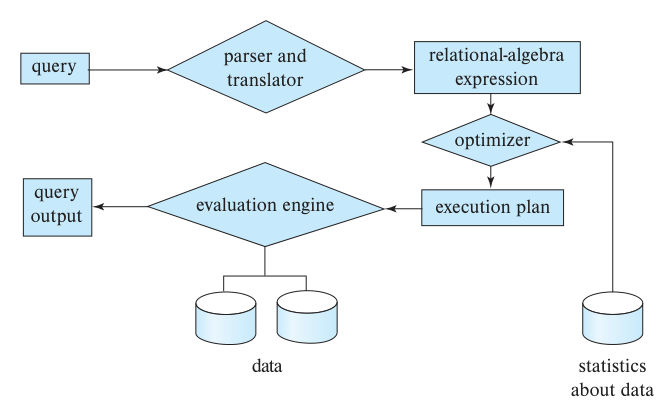
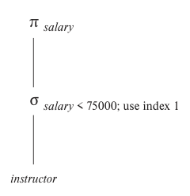
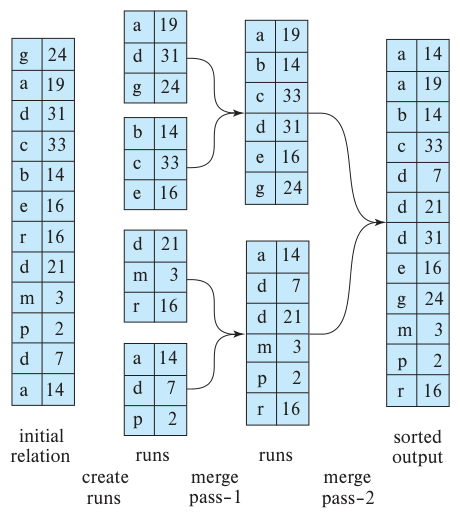
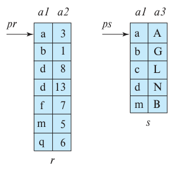
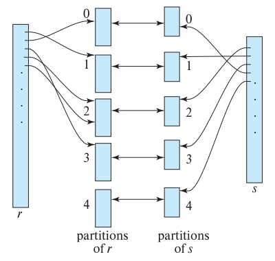
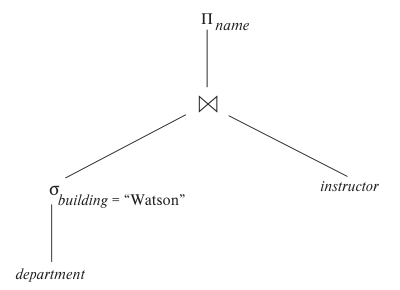
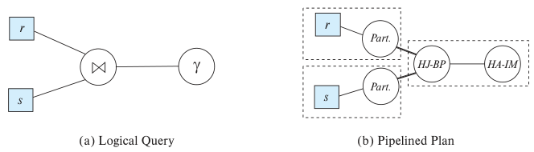

第15章 查询处理
查询处理是指从数据库提取数据所涉及的一系列活动，包括把用高级数据库语言表达的查询转换为文件系统物理层可以使用的表达式，执行各种查询优化变换，以及实际执行查询。
15.1 概述
图 15.1 展示了处理查询的步骤。基本步骤如下。
1. 解析与转换。
2. 优化。
3. 执行。
开始处理查询之前，系统必须把查询转换为可以使用的形式。SQL 等语言适合人使用，却不适合作为系统内部的查询表示。以扩展关系代数为基础的内部表示更为合适。
因此，查询处理的第一步，是把给定查询转换为内部形式。这个转换过程类似于编译器中语法分析器所做的工作。在生成查询内部形式时，语法分析器检查用户查询的语法，验证查询中出现的关系名是否对应数据库中的关系，等等。系统先构建查询的语法分析树，再将它转换为关系代数表达式。如果查询引用了视图，转换阶段还会将每一处视图引用替换为定义该视图的关系代数表达式。1
大多数编译原理教材都详细介绍了语法分析。

图 15.1 查询处理步骤。query 为查询；parser and translator 为解析器与转换器；relational-algebra expression 为关系代数表达式；optimizer 为优化器；execution plan 为执行计划；evaluation engine 为执行引擎；query output 为查询输出；data 为数据；statistics about data 为数据统计信息。
给定一个查询，通常有多种方法可以计算其答案。例如，我们已经看到，在 SQL 中，同一个查询可以有多种写法。每条 SQL 查询本身也可以用不同方式转换为关系代数表达式。此外，查询的关系代数表示只对执行方式作出了部分规定；通常也有多种方式执行同一个关系代数表达式。以以下查询为例：
select salary
from instructor
where salary < 75000;
这个查询可以转换为以下任一个关系代数表达式：
- σsalary<75000(Πsalary(instructor))
- Πsalary(σsalary<75000(instructor))
进一步说，每种关系代数运算又可以采用不同算法执行。例如，要实现上述选择，可以检查 instructor 的每个元组，找出 salary 小于 75000 的元组。如果 salary 属性上有 B+ 树索引，也可以用索引定位这些元组。
要完整规定查询的执行方式，除关系代数表达式外，还需要为表达式添加注释，指定每种运算如何执行。注释可以指定某种运算使用的算法，或者使用的一个或多个具体索引。附有执行方式说明的关系代数运算，称为执行原语（evaluation primitive）。能够完成查询的一系列原语操作，构成查询执行计划（query-execution plan），也称查询求值计划（query-evaluation plan）。图 15.2 展示了示例查询的一个执行计划，其中为选择运算指定了一个具体索引，图中称为“index 1”。查询执行引擎接收查询执行计划，执行该计划，并返回查询答案。
同一个查询的不同执行计划，开销可能不同。我们并不要求用户用某种写法暗示最有效的执行计划。系统有责任构建一个尽可能降低查询执行开销的计划，这项任务称为查询优化。第 16 章将详细介绍查询优化。
选择查询计划后，就按该计划执行查询，输出结果。
以上步骤具有代表性，数据库系统未必都严格遵循。例如，有些数据库采用根据 SQL 查询结构构建的、附有注释的语法分析树作为表示，不采用关系代数表示。不过，这里介绍的概念构成了数据库查询处理的基础。
为了优化查询，查询优化器必须了解每种运算的开销。精确开销很难计算，因为它取决于许多参数，例如某种运算实际可用的内存。不过，仍然可以粗略估算每种运算的执行开销。
本章研究如何执行查询计划中的各个运算，以及如何估算它们的开销；第 16 章再讨论查询优化。第 15.2 节概述查询开销的度量方法，第 15.3～15.6 节介绍各个关系代数运算的执行方式。多个运算可以组成一条流水线，使每个运算在另一个运算生成输入元组的同时就开始处理这些元组。第 15.7 节研究如何协调查询执行计划中多个运算的执行，尤其是如何利用流水线运算避免把中间结果写入磁盘。

图 15.2 一个查询执行计划。use index 1 表示使用索引 1。
15.2 查询开销的度量
一个查询可能有多种执行计划，需要能够根据估算开销比较这些方案，并选择最佳计划。为此，必须估算各个运算的开销，再将它们组合成整个查询执行计划的开销。因此，本章后面研究每种运算的执行算法时，也会概述其开销估算方法。
查询执行开销可以用多种资源来度量，包括磁盘访问、执行查询所需的 CPU 时间，以及并行和分布式数据库系统中的通信开销。第 21～23 章将讨论并行和分布式数据库系统。
对于存储在磁盘上的大型数据库，访问磁盘数据的 I/O 开销通常超过其他开销，因此早期成本模型在估算查询运算开销时，主要关注 I/O。不过，随着闪存容量增大、价格降低，如今大多数组织的数据已经可以以合理成本存储在固态驱动器（SSD）上。此外，近年来主存容量显著增加，价格也下降到这样的程度：许多组织可以以合理成本把数据放在主存中供查询使用；当然，为了保证持久性，数据仍须存储在闪存或磁盘上。
当数据驻留在内存或 SSD 上时，I/O 开销不再占据绝大部分总开销，计算查询执行开销时必须计入 CPU 开销。为简化讲解，本章模型不包含 CPU 开销，但它们可以通过简单的估算方法近似计算。例如，截至 2018 年，PostgreSQL 的成本模型包括：（i）每个元组的 CPU 开销；（ii）处理每个索引项的 CPU 开销，另加 I/O 开销；（iii）每个运算符或函数的 CPU 开销，例如算术运算符、比较运算符及相关函数。数据库为每项开销设定默认值，分别乘以处理的元组数、处理的索引项数，以及执行的运算符和函数数。这些默认值可以通过配置参数修改。
我们把从存储设备传输的块数和随机 I/O 访问次数作为估算查询执行计划开销的两个重要因素。在磁盘上，每次随机 I/O 访问都需要寻道。若磁盘子系统传输一个数据块平均需要 tT 秒，平均块访问时间（寻道时间加旋转延迟）为 tS 秒，那么传输 b 个块、执行 S 次随机 I/O 访问的运算，需要 b × tT + S × tS 秒。
tT 和 tS 必须针对实际使用的磁盘系统进行校准。下面概述一些性能数据，存储系统的完整介绍见第 12 章。对 2018 年的高端磁盘，假定块大小为 4 KB，传输速率为每秒 40 MB，典型值为 tS = 4 毫秒、tT = 0.1 毫秒。2
虽然 SSD 不执行物理寻道，但启动 I/O 操作仍有开销。我们用 tS 表示从发出 I/O 请求到返回第一个数据字节之间的延迟。对于 2018 年采用 SATA 接口的中端 SSD，tS 约为 90 微秒，传输一个 4 KB 块的时间 tT 约为 10 微秒。因此，SSD 每秒能够支持约 10,000 次随机 4 KB 读取；通过标准 SATA 接口顺序读取时，吞吐率为每秒 400 MB。采用 PCIe 3.0×4 接口的 SSD，其 tS 更短，为 20～60 微秒，传输速率更高，约为每秒 2 GB，对应的 tT 为 2 微秒。随型号不同，每秒约可支持 50,000～15,000 次随机 4 KB 块读取。3
对于已在主存中的数据，读取单位是缓存行，而非磁盘块。不过，若假定读取整个数据块，传输内存中的一个 4 KB 块，tT 小于 1 微秒；从内存取数据的延迟 tS 小于 100 纳秒。
不同存储设备的速度差异很大，理想情况下，数据库系统应在软件安装过程中执行测试寻道与块传输，为具体系统或存储设备估算 tS 和 tT。不能自动推断这些数值的数据库，通常允许用户在配置文件中指定。
区分块读取与块写入，可以进一步细化开销估计。在磁盘上，块写入的开销通常约为读取的两倍，因为磁盘系统写入后会回读扇区，验证写入是否成功。对于 PCIe 闪存，写入吞吐率可能比读取低约 50%；但 SATA 接口有限的速度几乎完全掩盖了这一差异，使写入和读取吞吐率相近。不过，这些吞吐率数值没有反映覆盖写入块时所需的擦除开销。为简化讨论，我们忽略这一细节。
本章给出的开销估计，不包含将某个运算的最终结果写回磁盘的开销。需要时，另行计入这部分开销。
本章讨论的所有算法，其开销都取决于主存缓冲区的大小。最好的情况下，数据能全部装入缓冲区，读入后就无须再次访问磁盘。最坏情况下，可以假定缓冲区只能容纳少量数据块，大约每个关系一块。不过，在如今主存容量较大的条件下，这种最坏情况假设过于悲观。通常有相当多的主存可用于处理查询，因而本章的开销估计以运算符可用的内存量 M 为参数。在 PostgreSQL 中，为了估算开销，查询可用的总内存（称为有效缓存大小，effective cache size）默认假定为 4 GB；若一个查询有多个运算符并发执行，可用内存就必须在它们之间分配。
此外，虽然我们假定最初必须从磁盘读取数据，但某个被访问的块可能已经在内存缓冲区中。为简化讨论，我们也忽略这种影响；因此，计划执行时的实际磁盘访问开销可能低于估算值。为至少部分考虑缓冲区驻留的影响，PostgreSQL 采用以下简便处理：把随机页读取的开销假定为实际值的十分之一，以模拟 90% 的读取都能在缓存中找到数据的情况。另外，B+ 树内部节点经常被访问，为模拟这一情况，大多数数据库系统假定所有内部节点都在内存缓冲区中，因而遍历索引只在访问叶节点时产生一次随机 I/O 开销。
假定计算机中没有其他活动，一个查询执行计划的响应时间，即执行该计划所需的实际经过时间，会包含上述全部开销，因此可以作为计划开销的度量。遗憾的是，不实际执行计划，很难估算其响应时间，原因有二。
1. 响应时间取决于查询开始执行时缓冲区中的内容。优化查询时无法获得这些信息；即使能够获得，也很难将其影响计入。
2. 在多磁盘系统中，响应时间取决于访问如何分布到各磁盘。不了解数据在磁盘上的详细布局，就很难估计这种分布。
一个计划可能以消耗更多资源为代价，缩短响应时间。例如，在多磁盘系统中，计划 A 虽然需要更多次磁盘读取，但可以在多块磁盘上并行读取；计划 B 的读取次数较少，却每次只能从一块磁盘读取。计划 A 可能更快完成。不过，若同一查询的多个实例并发采用计划 A 执行，由于它给磁盘带来的负载更大，整体响应时间可能长于这些实例采用计划 B 执行时的响应时间。
因此，优化器通常以尽量减少查询计划的总资源消耗为目标；最短响应时间一般不作为其直接优化目标。本章估算磁盘访问总时间（包括寻道和数据传输）的模型，就是这种基于资源消耗的查询成本模型。
15.3 选择运算
在查询处理中，文件扫描是访问数据的最底层运算符。文件扫描通过搜索算法定位并取出满足选择条件的记录。在关系系统中，若一个关系单独存储在一个文件里，文件扫描就可以读出整个关系。
15.3.1 使用文件扫描与索引的选择
考虑对一个关系执行选择，其元组集中存储在同一个文件中。最直接的实现方式如下。
- A1（线性搜索）。系统扫描文件的每个块，检查所有记录是否满足选择条件。访问文件第一块需要一次初始寻道。若文件的块不连续存放，可能还需要额外寻道；为简化讨论，我们忽略这一影响。
虽然线性搜索可能比其他选择算法慢，但它适用于任何文件，不受文件排序方式、是否存在索引，以及选择运算性质的限制。下面研究的其他算法都不能适用于所有情况，但在适用时，通常比线性搜索更快。
图 15.3 给出了线性扫描和其他选择算法的开销估计。图中用 hᵢ 表示 B+ 树高度，并假定从根到叶路径上的每个节点都需要一次随机 I/O。多数实际优化器假定树的内部节点已在内存缓冲区中，因为这些节点访问频繁，而且 B+ 树中非叶节点通常不足总节点数的 1%。此时可以将 hᵢ 设为 1，简化成本公式，使从根到叶的一次遍历只计一次随机 I/O 开销。
索引结构也称为访问路径（access path），因为它提供了定位和访问数据的途径。第 14 章指出，按接近物理顺序的次序读取文件记录，效率较高。回忆一下，聚簇索引也称主索引，它使文件记录的读取顺序与文件中的物理顺序一致。不属于聚簇索引的索引，称为辅助索引或非聚簇索引。
使用索引的搜索算法称为索引扫描。处理查询时，根据选择谓词决定采用哪个索引。使用索引的搜索算法如下。
| 算法 | 方法 | 开销 | 原因 |
|---|---|---|---|
| A1 | 线性搜索 | tS + bᵣ × tT | 一次初始寻道，加 bᵣ 次块传输；bᵣ 为文件中的块数。 |
| A1 | 线性搜索，键属性上的等值条件 | 平均情况：tS + (bᵣ/2) × tT | 至多一条记录满足条件，找到该记录后即可停止扫描。最坏情况下仍需 bᵣ 次块传输。 |
| A2 | 聚簇 B+ 树索引，键属性上的等值条件 | (hᵢ + 1) × (tT + tS) | hᵢ 为索引高度。索引查找遍历树的各层，再用一次 I/O 取出记录；每次 I/O 都需要寻道和传输一个块。 |
| A3 | 聚簇 B+ 树索引，非键属性上的等值条件 | hᵢ × (tT + tS) + tS + b × tT | 树的每一层需要一次寻道，访问第一个数据块再需要一次寻道。b 为包含指定搜索键记录的块数，需要读取全部这些块。它们是叶子块，假定按顺序存储，因为索引是聚簇的，所以无须额外寻道。 |
| A4 | 辅助 B+ 树索引，键属性上的等值条件 | (hᵢ + 1) × (tT + tS) | 与聚簇索引的相应情况类似。 |
| A4 | 辅助 B+ 树索引，非键属性上的等值条件 | (hᵢ + n) × (tT + tS) | n 为取出的记录数。索引遍历开销与 A3 相同，但每条记录都可能位于不同块，每取一条记录需要一次寻道。n 很大时，开销可能很高。 |
| A5 | 聚簇 B+ 树索引，比较条件 | hᵢ × (tT + tS) + tS + b × tT | 与 A3 的非键属性等值条件相同。 |
| A6 | 辅助 B+ 树索引，比较条件 | (hᵢ + n) × (tT + tS) | 与 A4 的非键属性等值条件相同。 |
图 15.3 选择算法的开销估计。
- A2（聚簇索引，键属性上的等值条件）。若键属性上有聚簇索引，选择条件是该属性上的等值比较，就可以利用索引取出满足条件的单条记录。开销估计见图 15.3。为模拟索引内部节点已在内存缓冲区中的常见情况，可以把 hᵢ 设为 1。
- A3（聚簇索引，非键属性上的等值条件）。若选择条件是非键属性 A 上的等值比较，可以用聚簇索引取出多条记录。与前一种情况的唯一区别，是可能需要读取多条记录。不过，由于文件按搜索键排序，这些记录必定连续存放。开销估计见图 15.3。
- A4（辅助索引，等值条件）。指定等值条件的选择可以使用辅助索引。若等值条件作用于键属性，取出一条记录；若索引字段不是键，则可能取出多条记录。
第一种情况下，只取出一条记录，开销与聚簇索引的 A2 情形相同。
第二种情况下，每条记录可能位于不同块，因此每取一条记录都可能需要一次 I/O，而每次 I/O 又包括寻道和块传输。若各记录位于不同磁盘块，并且取块顺序是随机的，则最坏开销为 (hᵢ + n) × (tS + tT)，其中 n 是取出的记录数。取出的记录很多时，最坏开销可能高于线性搜索。
如果内存缓冲区较大，包含某条记录的块可能已经在缓冲区中。考虑这种情况的概率，可以估算选择运算的平均或预期开销。缓冲区较大时，这种估计会明显低于最坏情况估计。
在包括 A2 在内的某些算法中，使用 B+ 树文件组织能够省去一次访问，因为记录直接存储在树的叶子层。
如第 14.4.2 节所述，若记录采用 B+ 树文件组织，或其他可能需要迁移记录位置的文件组织，辅助索引通常不保存记录指针，4 而是保存用作 B+ 树文件组织搜索键的属性值。通过这种辅助索引访问记录，开销更大：先搜索辅助索引，得到 B+ 树文件组织的搜索键值，再查找 B+ 树文件组织，取得记录。使用这种索引时，前面给出的辅助索引成本公式需要作相应调整。
15.3.2 涉及比较条件的选择
考虑形式为 σA≤v(r) 的选择。可以用线性搜索实现，也可以按以下方式使用索引。
- A5（聚簇索引，比较条件）。选择条件为比较运算时，可以使用聚簇有序索引，例如聚簇 B+ 树索引。对于 A > v 或 A ≥ v，可借助 A 上的聚簇索引取出元组：若条件是 A ≥ v，先在索引中查找 v，定位文件中第一个 A ≥ v 的元组，再从它开始扫描到文件末尾，即可返回全部满足条件的元组。若条件是 A > v，则从第一个 A > v 的元组开始扫描。这种情况的开销估计与 A3 相同。
对于 A < v 或 A ≤ v，无须索引查找。若条件是 A < v，就从文件开头进行简单扫描，一直扫描到第一个 A = v 的元组，但不包含该元组。A ≤ v 的情况类似，只是扫描到第一个 A > v 的元组，同样不包含它。在这两种情况下，索引都没有作用。
- A6（辅助索引，比较条件）。对包含 <、≤、≥ 或 > 的比较条件，可以用辅助有序索引引导记录读取。对于 < 和 ≤，从最小值扫描最底层索引块，直到 v；对于 > 和 ≥，从 v 扫描到最大值。
辅助索引提供记录指针，但仍须沿这些指针取得实际记录。相邻记录可能位于不同磁盘块，因此每取一条记录都可能需要一次 I/O；同前，每次 I/O 包括一次寻道和一次块传输。取出的记录很多时，辅助索引可能比线性搜索开销更大。因此，只有选出的记录很少时，才应使用辅助索引。
只要提前知道匹配元组数，查询优化器就可以根据开销估计，在辅助索引与线性扫描之间作出选择。不过，若编译时无法准确知道匹配元组数，任何一种选择都可能因实际匹配数量而表现很差。
为处理这种情况，当存在辅助索引、却无法准确知道匹配记录数时，PostgreSQL 会使用一种混合算法，称为位图索引扫描（bitmap index scan）。5 算法先创建一个位图，其位数等于关系中的块数，所有位初始化为 0。随后用辅助索引找到匹配元组的索引项，但不立即取出元组：每找到一个索引项，就从中得到块号，将位图中对应位设为 1。
处理完全部索引项后，扫描位图，找出所有对应位为 1 的块，它们恰好是包含匹配记录的块。然后线性扫描关系，跳过位不为 1 的块，只读取对应位为 1 的块，再在每个块内部扫描，取出其中全部匹配记录。
与线性扫描相比，该算法在最坏情况下只多出少量开销，最好情况下则便宜得多。同样，与通过辅助索引扫描直接取出元组相比，它在最坏情况下也只多出少量开销，最好情况下则便宜得多。因此，这种混合算法保证其性能不会明显差于该数据库实例的最佳计划。
该算法还有一种变体：收集全部索引项并排序，使用本章稍后介绍的排序算法，然后扫描关系，跳过没有任何匹配项的块。与对索引项排序相比，前述位图方法的开销可能更低。
15.3.3 复杂选择的实现
到目前为止，我们只考虑了 A op B 形式的简单选择条件，其中 op 为等值或比较运算。下面考虑更复杂的选择谓词。
- 合取：合取选择具有以下形式：σθ₁∧θ₂∧⋯∧θₙ(r)。
- 析取：析取选择具有以下形式：σθ₁∨θ₂∨⋯∨θₙ(r)。满足析取条件的记录集合，就是分别满足各个简单条件 θᵢ 的记录集合的并集。
- 否定：选择 σ¬θ(r) 的结果，是 r 中使条件 θ 的计算结果为假的元组集合。在没有 null 值时，这就是 r 中不属于 σθ(r) 的元组集合。
涉及简单条件的合取或析取时，可以采用下列算法实现选择运算。
- A7（使用单个索引的合取选择）。先判断某个简单条件的属性上是否存在访问路径。如果存在，就可以用 A2～A6 中的某种选择算法取出满足该条件的记录，再在内存缓冲区中检查每条记录是否满足其余简单条件，从而完成选择。
为降低开销，选择一个 θᵢ 及 A1～A6 中的一种算法，使两者组合执行 σθᵢ(r) 的开销最小。A7 的开销就是所选算法的开销。
- A8（使用复合索引的合取选择）。某些合取选择可能有适用的复合索引，即多属性索引。若选择在两个或更多属性上指定了等值条件，并且这些属性字段的组合上有复合索引，就可以直接搜索该索引。采用 A2、A3 还是 A4，取决于索引类型。
- A9（通过标识符求交集的合取选择）。另一种方法使用记录指针或记录标识符。它要求各简单条件涉及的字段上有包含记录指针的索引。算法扫描每个索引，取得满足相应简单条件的元组指针，再对这些指针集合求交集，得到满足整个合取条件的元组指针集合，最后沿指针取出实际记录。若并非所有简单条件都有索引，则还需对取出的记录检查其余条件。
A9 的开销是各个索引扫描开销之和，再加上取出指针列表交集中记录的开销。对指针列表排序，再按排序顺序取出记录，可以降低开销。这样做有两个好处：（1）指向同一块内记录的指针集中在一起，使用一次 I/O 就能取得该块中所有选中的记录；（2）按排序后的块顺序读取，尽量减少磁头移动。第 15.4 节介绍排序算法。
- A10（通过标识符求并集的析取选择）。若析取选择中的所有条件都有访问路径，就扫描每个索引，取得满足相应简单条件的元组指针。对取得的全部指针求并集，得到所有满足析取条件的元组的指针集合，然后沿指针取出实际记录。
不过，只要有一个条件没有访问路径，就必须线性扫描关系，才能找出满足该条件的元组。因此，只要析取条件中有这样一个条件，最有效的访问方法就是线性扫描，并在扫描过程中对每个元组检查整个析取条件。
带否定条件的选择如何实现，留作读者练习，见实践练习 15.6。
15.4 排序
排序在数据库系统中很重要，原因有二。首先，SQL 查询可以要求按指定顺序输出结果。其次，对查询处理同样重要的是：连接等若干关系运算，在输入关系预先排序后，可以更高效地实现。因此，在第 15.5 节讨论连接之前，先介绍排序。
可以在排序键上建立索引，再利用索引按排序顺序读取关系，以此对关系排序。不过，这种方法只通过索引建立逻辑顺序，并未对关系进行物理排序。按排序顺序读取元组时，每条记录都可能需要一次磁盘访问，包括寻道和块传输。由于记录数可能远大于块数，开销可能很高。因此，物理地排列记录可能更为合适。
排序问题已经得到广泛研究，既包括完全装得进主存的关系，也包括大于内存的关系。前一种情况可使用快速排序等标准技术。本节讨论后一种情况。
15.4.1 外部归并排序算法
对无法全部装入内存的关系进行排序，称为外部排序。最常用的技术是外部归并排序算法（external sort–merge algorithm）。下面介绍这一算法。设 M 为可供排序使用的主存缓冲区块数，即可用主存能够缓冲多少个磁盘块的内容。
1. 第一阶段生成若干有序归并段（sorted run）。每个归并段内部有序，但只包含关系中的一部分记录。
i = 0;
repeat
read M blocks of the relation, or the rest of the relation,
whichever is smaller;
sort the in-memory part of the relation;
write the sorted data to run file R_i;
i = i + 1;
until the end of the relation
每次读入 M 个块，或关系剩余的全部块，取两者中较少的数量；对读入内存的部分排序，将有序数据写入归并段文件 Rᵢ，然后继续，直到关系读完。
2. 第二阶段合并各归并段。暂且假定归并段总数 N 小于 M，这样就能为每个归并段分配一个缓冲块，并留出一个块缓冲输出。合并阶段的过程如下。
read one block of each of the N files R_i into a buffer block in memory;
repeat
choose the first tuple (in sort order) among all buffer blocks;
write the tuple to the output, and delete it from the buffer block;
if the buffer block of any run R_i is empty and not end-of-file(R_i)
then read the next block of R_i into the buffer block;
until all input buffer blocks are empty
先从 N 个文件 Rᵢ 各读一块到内存缓冲区。反复从所有缓冲块中选出排序最靠前的元组，将其写入输出，并从所在缓冲块删除；若某个归并段的缓冲块已空且该文件尚未读完，就读入它的下一块。所有输入缓冲块都为空时，结束。
合并阶段输出的就是已排序的关系。输出文件也使用缓冲，以减少磁盘写入次数。上述合并是标准内存归并排序算法中二路合并的推广；它合并 N 个归并段，因此称为 N 路合并。
一般来说，若关系远大于内存，第一阶段可能生成 M 个或更多归并段，合并时无法为每个归并段分配一个缓冲块。这时需要多趟合并。由于内存能容纳 M−1 个输入缓冲块，每次合并可以接受 M−1 个归并段作为输入。
第一趟合并的过程如下：按上面第 2 步的方法，先把前 M−1 个归并段合并为一个，供下一趟使用；再合并接下来的 M−1 个归并段，依此类推，直到处理完所有初始归并段。此时，归并段数量缩小为原来的 1/(M−1)。若剩余数量仍大于或等于 M，就以上一趟生成的归并段为输入，再合并一趟。每趟都将归并段数量缩小为原来的 1/(M−1)。重复所需的趟数，直到归并段数量小于 M，再由最后一趟生成排序后的输出。
图 15.4 展示了对一个示例关系进行外部归并排序的步骤。为便于说明，假定每块只能容纳一个元组，即 fᵣ = 1，并且内存最多容纳三个块。合并阶段使用两个输入块和一个输出块。

图 15.4 使用归并排序进行外部排序。initial relation 为初始关系；create runs 为生成归并段；runs 为归并段；merge pass–1、merge pass–2 分别为第 1 趟和第 2 趟合并；sorted output 为有序输出。
15.4.2 外部归并排序的开销分析
外部归并排序的磁盘访问开销可按以下方式计算。设 bᵣ 为存放关系 r 记录的块数。第一阶段读取关系的每个块，再将它们写出，共需 2bᵣ 次块传输。初始归并段数量为 ⌈bᵣ/M⌉。合并时，若每次只从一个归并段读入一块，会产生大量寻道。为减少寻道，可以每次读写更多块，记为 bb；这要求为每个输入归并段和输出归并段各分配 bb 个缓冲块。于是，每趟可以合并 ⌊M/bb⌋−1 个归并段，归并段数量也按这一倍数缩小。所需合并趟数为 ⌈log⌊M/bb⌋−1(bᵣ/M)⌉。每趟都将关系的每个块读取一次、写出一次，但有两种例外。第一，最后一趟可以直接产生有序输出，无须将结果写到磁盘。第二，某些归并段在某一趟中可能既不读入也不写出。例如，若某趟有 ⌊M/bb⌋ 个归并段需要合并，就将其中 ⌊M/bb⌋−1 个读入并合并，剩余一个在这一趟中不被访问。忽略后一种情况带来的少量节省，关系外部排序的总块传输次数为：
bᵣ(2⌈log⌊M/bb⌋−1(bᵣ/M)⌉ + 1)
将这一公式用于图 15.4 的例子，并令 bb = 1，得到总块传输次数为 12 × (4 + 1) = 60。可以对照图中步骤验证。注意，这些数值不包含写出最终结果的开销。
还需加上磁盘寻道开销。生成归并段时，为每个归并段读取数据，以及将归并段写出，都需要寻道。每趟合并读取数据约需 ⌈bᵣ/bb⌉ 次寻道。6 虽然输出是顺序写入的，但若它与输入归并段位于同一磁盘，连续两次块写入之间，磁头可能已经移到别处。因此，除最后一趟外，每趟合并总共要计入 2⌈bᵣ/bb⌉ 次寻道。最后一趟例外，是因为假定最终结果不写回磁盘。
总寻道次数为：
2⌈bᵣ/M⌉ + ⌈bᵣ/bb⌉(2⌈log⌊M/bb⌋−1(bᵣ/M)⌉ − 1)
将这一公式用于图 15.4，令每个归并段的缓冲块数 bb = 1，得到总寻道次数为 8 + 12 × (2 × 2 − 1) = 44。
15.5 连接运算
本节研究计算关系连接的几种算法，并分析各自的开销。
等值连接（equi-join）是指形式为 r ⋈r.A=s.B s 的连接，其中 A、B 分别为关系 r、s 的属性或属性集。
本节将持续使用以下表达式作为例子：
student ⋈ takes
采用的关系模式与第 2 章相同。假定这两个关系具有以下信息。
- student 的记录数：nstudent = 5000。
- student 的块数：bstudent = 100。
- takes 的记录数：ntakes = 10,000。
- takes 的块数：btakes = 400。
15.5.1 嵌套循环连接
图 15.5 给出计算关系 r 与 s 的 θ 连接 r ⋈θ s 的简单算法。它主要由两层嵌套的 for 循环组成，因此称为嵌套循环连接算法（nested-loop join）。关系 r 称为连接的外层关系，s 称为内层关系，因为遍历 r 的循环包围了遍历 s 的循环。算法使用记号 tᵣ · tₛ，其中 tᵣ、tₛ 为元组，tᵣ · tₛ 表示把两个元组的属性值连接起来构成的新元组。
for each tuple t_r in r do begin
for each tuple t_s in s do begin
test pair (t_r, t_s) to see if they satisfy the join condition θ
if they do, add t_r · t_s to the result;
end
end
图 15.5 嵌套循环连接。
与用于选择的线性文件扫描类似，嵌套循环连接不需要索引，而且适用于任何连接条件。它也很容易扩展为计算自然连接：自然连接可以表示为 θ 连接后再用投影去掉重复属性，因此，只需在把 tᵣ · tₛ 加入结果之前，增加删除重复属性的步骤。
嵌套循环连接开销较高，因为它会检查两个关系中的每一对元组。设 r、s 的元组数分别为 nᵣ、nₛ，需要考虑的元组对数就是 nᵣ × nₛ。对 r 的每条记录，都必须完整扫描一次 s。在最坏情况下，缓冲区只能为每个关系各保存一个块，总共需要 nᵣ × bₛ + bᵣ 次块传输，其中 bᵣ、bₛ 分别为存放 r、s 元组的块数。内层关系 s 按顺序读取，每次扫描只需一次寻道；读取 r 总共需要 bᵣ 次寻道，因此总寻道次数为 nᵣ + bᵣ。最好的情况下，内存足以同时装入两个关系，每块只读一次，因此只需 bᵣ + bₛ 次块传输和两次寻道。
若一个关系能够完全装入主存，把它作为内层关系较有利，因为这样内层关系只需读取一次。因此，若 s 足够小，能够全部放入主存，仍然只需 bᵣ + bₛ 次块传输和两次寻道，与两个关系都能放入内存时的开销相同。
现在考虑 student 与 takes 的自然连接。暂且假定两个关系都没有索引，也不准备创建索引。可以使用嵌套循环计算连接，令 student 为外层关系，takes 为内层关系。这需要检查 5000 × 10,000 = 50 × 10⁶ 对元组。最坏情况下，块传输次数为 5000 × 400 + 100 = 2,000,100，再加上 5000 + 100 = 5100 次寻道。最好情况下，两个关系各读一次即可完成计算，最多需要 100 + 400 = 500 次块传输和两次寻道，比最坏情况好得多。若改用 takes 作为外层关系、student 作为内层关系，最坏开销为 10,000 × 100 + 400 = 1,000,400 次块传输，加上 10,400 次寻道。块传输次数显著减少，虽然寻道次数增加，但在 tS = 4 毫秒、tT = 0.1 毫秒的假设下，总开销降低了。
15.5.2 块嵌套循环连接
若缓冲区太小，两个关系都无法完全放入内存，仍可通过按块处理关系，大幅减少块访问。图 15.6 给出块嵌套循环连接（block nested-loop join），它是嵌套循环连接的一种变体，将内层关系的每个块与外层关系的每个块配对。在每一对块内，再将一个块的每个元组与另一个块的每个元组配对，生成全部元组对。同前，把所有满足连接条件的元组对加入结果。
for each block B_r of r do begin
for each block B_s of s do begin
for each tuple t_r in B_r do begin
for each tuple t_s in B_s do begin
test pair (t_r, t_s) to see if they satisfy the join condition
if they do, add t_r · t_s to the result;
end
end
end
end
图 15.6 块嵌套循环连接。
块嵌套循环连接与基本嵌套循环连接的主要开销差异在于：最坏情况下，内层关系 s 的每个块，对外层关系的每个块只需读取一次；基本算法则对外层关系的每个元组都读取一次。因此，最坏总块传输次数为 bᵣ × bₛ + bᵣ，其中 bᵣ、bₛ 分别为存放 r、s 记录的块数。每次扫描内层关系需要一次寻道，扫描外层关系时每块需要一次寻道，总共为 2bᵣ 次。若两个关系都无法装入内存，用较小的关系作为外层关系更高效。最好的情况是内层关系能装入内存，此时需 bᵣ + bₛ 次块传输和两次寻道；在这种情况下，应选择较小的关系作为内层关系。
回到 student ⋈ takes 的例子，使用块嵌套循环连接时，最坏情况下，对 student 的每个块，都要把 takes 的每个块读取一次。因此，共需 100 × 400 + 100 = 40,100 次块传输，以及 2 × 100 = 200 次寻道。基本嵌套循环连接的最坏情况则需要 5000 × 400 + 100 = 2,000,100 次块传输和 5100 次寻道，可见开销已大幅改善。最好情况的开销不变，仍为 100 + 400 = 500 次块传输和两次寻道。
嵌套循环和块嵌套循环的性能还可以进一步改善。
- 若自然连接或等值连接的连接属性构成内层关系的键，那么对每个外层关系元组，一旦找到第一个匹配元组，内层循环就可以终止。
- 在块嵌套循环算法中，外层关系的分组单位可以取为内存能够容纳的最大规模，同时为内层关系和输出留出足够缓冲空间，无须局限于一个磁盘块。换言之，若内存有 M 个块，每次读入外层关系的 M−2 个块；每读入内层关系的一块，就将它与这 M−2 个外层关系块连接。这样，内层关系扫描次数从 bᵣ 降为 ⌈bᵣ/(M−2)⌉，其中 bᵣ 为外层关系的块数。总开销为 ⌈bᵣ/(M−2)⌉ × bₛ + bᵣ 次块传输，以及 2⌈bᵣ/(M−2)⌉ 次寻道。
- 内层扫描可以交替向前和向后进行。这样安排磁盘块请求，可以复用上次扫描后仍留在缓冲区中的数据，减少磁盘访问次数。
- 若内层关系的连接属性上有索引，可以用更高效的索引查找替代文件扫描。第 15.5.3 节将介绍这种优化。
15.5.3 索引嵌套循环连接
在图 15.5 的嵌套循环连接中，若内层关系的连接属性上有索引，就可以用索引查找替代文件扫描。对外层关系 r 的每个元组 tᵣ，利用索引查找 s 中能够与 tᵣ 满足连接条件的元组。
这种方法称为索引嵌套循环连接（indexed nested-loop join）。它既可以使用已有索引，也可以使用专门为执行该连接创建的临时索引。
给定元组 tᵣ，查找 s 中与之满足连接条件的元组，就是对 s 执行一次选择。例如，考虑 student ⋈ takes。若有一个 student 元组，其 ID 为“00128”，则相关的 takes 元组就是满足选择条件“ID = 00128”的元组。
索引嵌套循环连接的开销可按以下方式计算。对外层关系 r 的每个元组，都在 s 的索引上执行一次查找，并取出相关元组。最坏情况下，缓冲区只够存放 r 的一个块和索引的一个块。读取关系 r 需要 bᵣ 次 I/O，其中 bᵣ 是存放 r 记录的块数；每次 I/O 都需要一次寻道和一次块传输，因为两次 I/O 之间磁头可能已经移动。对 r 的每个元组，还要在 s 上执行一次索引查找。因此，连接开销为 bᵣ(tT + tS) + nᵣ × c，其中 nᵣ 为 r 的记录数，c 为利用连接条件在 s 上执行一次选择的开销。第 15.3 节已经介绍了如何估算单次选择算法的开销，包括可能使用索引的情况；该估计就给出了 c 的值。
从成本公式可见，若 r 和 s 都有索引，通常将元组较少的关系作为外层关系最为高效。
例如，考虑以 student 为外层关系，对 student ⋈ takes 执行索引嵌套循环连接。假定 takes 的连接属性 ID 上有聚簇 B+ 树索引，每个索引节点平均包含 20 个条目。takes 有 10,000 个元组，因此树高为 4，再需要一次访问取得实际数据。由于 nstudent 为 5000，总开销为 100 + 5000 × 5 = 25,100 次磁盘访问，每次都包括寻道和块传输。相比之下，前面看到块嵌套循环连接需要 40,100 次块传输和 200 次寻道。这里块传输次数虽然减少，寻道次数却增加了；由于寻道远比块传输昂贵，总开销也更高。不过，若先对 student 进行选择，使其行数显著减少，索引嵌套循环连接就可能明显快于块嵌套循环连接。
15.5.4 归并连接
归并连接算法（merge-join，也称 sort-merge-join）可用于计算自然连接和等值连接。设 r(R)、s(S) 是要进行自然连接的关系，R ∩ S 是它们的共同属性。假定两个关系都已按 R ∩ S 排序，就可以采用类似归并排序中合并阶段的过程来计算连接。
15.5.4.1 归并连接算法
图 15.7 给出归并连接算法。算法中的 JoinAttrs 表示 R ∩ S 中的属性；tᵣ、tₛ 为 JoinAttrs 值相同的元组，tᵣ ⋈ tₛ 表示先连接它们的属性，再用投影去掉重复属性。算法为每个关系设置一个指针，初始指向各自的第一个元组，随着算法推进，指针逐步遍历关系。先把一个关系中连接属性值相同的一组元组读入 Sₛ。图 15.7 要求每个这样的元组集合 Sₛ 都能放入主存，稍后介绍如何扩展算法以取消这一要求。接着，读取另一个关系中对应的元组（若存在），边读取边处理。
pr := address of first tuple of r;
ps := address of first tuple of s;
while (ps ≠ null and pr ≠ null) do
begin
t_s := tuple to which ps points;
S_s := {t_s};
set ps to point to next tuple of s;
done := false;
while (not done and ps ≠ null) do
begin
t_s′ := tuple to which ps points;
if (t_s′[JoinAttrs] = t_s[JoinAttrs])
then begin
S_s := S_s ∪ {t_s′};
set ps to point to next tuple of s;
end
else done := true;
end
t_r := tuple to which pr points;
while (pr ≠ null and t_r[JoinAttrs] < t_s[JoinAttrs]) do
begin
set pr to point to next tuple of r;
t_r := tuple to which pr points;
end
while (pr ≠ null and t_r[JoinAttrs] = t_s[JoinAttrs]) do
begin
for each t_s in S_s do
begin
add t_s ⋈ t_r to result;
end
set pr to point to next tuple of r;
t_r := tuple to which pr points;
end
end.
图 15.7 归并连接。
图 15.8 给出了两个按连接属性 a₁ 排序的关系。对照图中的关系逐步执行归并连接算法，有助于理解这一过程。

图 15.8 用于归并连接的已排序关系。pr、ps 分别指向关系 r、s 的当前元组。
图 15.7 的算法要求：对于每个连接属性值，由具有该值的全部元组组成的集合 Sₛ，都必须能装入主存。即使关系 s 很大，这一要求通常也能满足。若某些连接属性值对应的 Sₛ 超过可用内存，就可以对这些集合采用块嵌套循环连接，将它们与 r 中连接属性值相同的对应元组块进行匹配。
若输入关系 r 或 s 尚未按连接属性排序，可以先排序，再采用归并连接。该算法也很容易从自然连接推广到更一般的等值连接。
15.5.4.2 开销分析
关系排序后，连接属性值相同的元组连续排列。因此，每个元组只需读取一次，每个块也只需读取一次。假定所有 Sₛ 集合都能装入内存，归并连接只遍历两个文件各一趟，因而很高效。块传输次数等于两个文件的总块数，即 bᵣ + bₛ。
若为每个关系分配 bb 个缓冲块，所需寻道次数为 ⌈bᵣ/bb⌉ + ⌈bₛ/bb⌉。寻道比数据传输昂贵得多，因此只要还有可用内存，为每个关系分配多个缓冲块就是合理的。例如，传输一个 4 KB 块的 tT = 0.1 毫秒，tS = 4 毫秒，若缓冲区大小为 400 块，即 1.6 MB，那么每传输 40 毫秒的数据，需要 4 毫秒寻道，寻道时间仅为传输时间的 10%。
若 r 或 s 尚未按连接属性排序，就必须先排序，并将排序开销加到上述开销中。若某些 Sₛ 集合无法装入内存，开销也会略有增加。
将归并连接应用于 student ⋈ takes 的例子，连接属性为 ID。假定两个关系已按 ID 排序，归并连接总共需要 400 + 100 = 500 次块传输。最坏情况下，每个输入关系只分配一个缓冲块，即 bb = 1，还需要 400 + 100 = 500 次寻道。实际上，只需为两个关系缓冲数据，因此 bb 可以设得大得多，寻道开销也会明显降低。
假定两个关系尚未排序，且内存只有最坏情况下的三个块，开销如下。
1. 根据第 15.4 节的公式，对 takes 排序需要 ⌈log3−1(400/3)⌉ = 8 趟合并。因此，排序需要 400 × (2⌈log3−1(400/3)⌉ + 1) = 6800 次块传输，写出结果还需 400 次。排序的寻道次数为 2 × ⌈400/3⌉ + 400 × (2 × 8 − 1) = 6268，写出结果还需 400 次，共 6668 次，因为每个归并段只有一个缓冲块。
2. 类似地，对 student 排序需要 ⌈log3−1(100/3)⌉ = 6 趟合并，产生 100 × (2⌈log3−1(100/3)⌉ + 1) = 1300 次块传输，再加上写出结果的 100 次。排序寻道次数为 2 × ⌈100/3⌉ + 100 × (2 × 6 − 1) = 1168，写出结果需 100 次，共 1268 次。
3. 最后，合并两个关系需要 400 + 100 = 500 次块传输和 500 次寻道。
因此，两个关系尚未排序、内存只有三个块时，总开销为 9100 次块传输，加上 8932 次寻道。
〔译注：原书此处合计写作 8932，但按前面列出的数值，6668 + 1268 + 500 = 8436 次寻道。〕
若内存有 25 个块，两个关系尚未排序，先排序再执行归并连接的开销如下。
1. takes 只需一趟合并即可完成排序，共需 400 × (2⌈log₂₄(400/25)⌉ + 1) = 1200 次块传输。类似地，student 排序需要 300 次。将有序结果写入磁盘，需要 400 + 100 = 500 次块传输；归并连接再将数据读回，需要 500 次。合计 2500 次块传输。
2. 假定每个归并段只分配一个缓冲块，那么对 takes 排序并将结果写入磁盘，需要 2 × ⌈400/25⌉ + 400 + 400 = 832 次寻道；对 student 则需要 2 × ⌈100/25⌉ + 100 + 100 = 208 次。归并连接读取有序数据还需 400 + 100 次寻道。合计 1640 次寻道。
〔译注：原书合计写作 1640；按所列分项，832 + 208 + 500 = 1540。〕
为每个归并段预留更多缓冲块，可以显著减少寻道。例如，合并 student 的四个归并段时，为每段及输出各分配 5 个缓冲块，开销就从 208 次降为 2 × ⌈100/25⌉ + ⌈100/5⌉ + ⌈100/5⌉ = 48 次寻道。若归并连接时，分别为 takes、student 各预留 12 个缓冲块，连接步骤的寻道次数就从 500 降为 ⌈400/12⌉ + ⌈100/12⌉ = 43。此时总寻道次数为 251。
因此，在关系尚未排序、内存为 25 块时，总开销为 2500 次块传输和 251 次寻道。
〔译注：原书给出 251 次寻道，但这里未说明 takes 排序的寻道开销如何变化。若仍采用前段的 832 次，则合计应为 832 + 48 + 43 = 923；251 无法由文中已列出的分项直接得到。〕
15.5.4.3 混合归并连接
若两个关系的连接属性上都有辅助索引，即使元组未排序，也可以采用归并连接的一种变体。算法通过索引扫描记录，从而按排序顺序取出它们。不过，这种变体有明显缺点：记录可能分散在文件的各个块中，每访问一个元组都可能需要访问一个磁盘块，开销很高。
为避免这一开销，可以采用将索引与归并连接结合的混合归并连接（hybrid merge-join）。假定一个关系已经排序，另一个未排序，但连接属性上有辅助 B+ 树索引。算法将已排序关系与辅助 B+ 树索引的叶层条目进行合并。结果文件包含已排序关系的元组，以及未排序关系的元组地址。随后按未排序关系的元组地址对结果文件排序，就能按物理存储顺序高效取出对应元组，完成连接。如何扩展这一技术以处理两个未排序关系，留作读者练习。
15.5.5 散列连接
与归并连接算法一样，散列连接算法（hash-join algorithm）可以实现自然连接和等值连接。散列连接用散列函数 h 对两个关系的元组进行分区。基本思路是：按连接属性的散列值，把各关系的元组分到若干集合中，每个集合内的元组具有相同的散列值。
作如下假设：
- h 是一个散列函数，将 JoinAttrs 的值映射到 {0, 1, …, nh}；JoinAttrs 表示 r 和 s 中用于自然连接的公共属性。
- r₀、r₁、…、rnh 表示 r 的元组分区，最初均为空。每个元组 tᵣ ∈ r 放入分区 rᵢ，其中 i = h(tᵣ[JoinAttrs])。
- s₀、s₁、…、snh 表示 s 的元组分区，最初均为空。每个元组 tₛ ∈ s 放入分区 sᵢ，其中 i = h(tₛ[JoinAttrs])。
散列函数 h 应具备第 14 章讨论过的随机性和均匀性这些良好性质。图 15.9 展示了关系的分区方式。

图 15.9 关系的散列分区。 图中 partitions of r 和 partitions of s 分别表示 r 和 s 的分区；编号相同的分区彼此配对。
15.5.5.1 基本原理
散列连接算法的思路如下：假设 r 的一个元组与 s 的一个元组满足连接条件，那么它们的连接属性值相同。如果这个值的散列值为 i，则 r 元组必定在 rᵢ 中，s 元组必定在 sᵢ 中。这样，rᵢ 中的 r 元组只需与 sᵢ 中的 s 元组比较，无需与其他分区中的 s 元组比较。
例如，设 d 是 student 中的元组，c 是 takes 中的元组，h 是作用于元组 ID 属性的散列函数，那么只有 h(c) = h(d) 时才需要检查 d 和 c。若 h(c) ≠ h(d)，c 和 d 的 ID 值必定不同。不过，当 h(c) = h(d) 时，仍须检查两者的连接属性值是否相同，因为不同的 ID 也可能得到相同的散列值。
图 15.10 给出了计算关系 r 和 s 自然连接的散列连接算法细节。与归并连接算法一样，tᵣ ⋈ tₛ 表示先连接元组 tᵣ 和 tₛ 的属性，再通过投影去掉重复属性。对关系分区后，散列连接的其余代码针对 i = 0, …, nh 的每一对分区，分别执行索引嵌套循环连接。为此，先在各个 sᵢ 上构建（build）散列索引，然后用 rᵢ 中的元组进行探测（probe，即查找 sᵢ）。关系 s 称为构建输入（build input），r 称为探测输入（probe input）。
sᵢ 的散列索引在内存中构建，取出元组无需访问磁盘。构建该索引所用的散列函数必须与之前的 h 不同，但仍只作用于连接属性。执行索引嵌套循环连接时，系统用这个散列索引取出与探测输入中的记录匹配的记录。
构建和探测阶段只需把构建输入与探测输入各扫描一遍。将散列连接算法扩展为计算一般的等值连接也很直接。
nh 必须足够大，使构建关系的每个分区 sᵢ 中的元组连同该分区的散列索引都能装入内存。探测关系的分区则不必装得进内存。最好选用较小的输入关系作为构建关系。如果构建关系占 bₛ 个块，要使 nh 个分区的每个分区大小都不超过 M，nh 至少应为 ⌈bₛ/M⌉。更精确地说，还要计入分区散列索引占用的额外空间，因此 nh 应相应增大。为简化分析，我们有时忽略散列索引的空间需求。
/* Partition s */
for each tuple t_s in s do begin
i := h(t_s[JoinAttrs]);
H_s_i := H_s_i ∪ {t_s};
end
/* Partition r */
for each tuple t_r in r do begin
i := h(t_r[JoinAttrs]);
H_r_i := H_r_i ∪ {t_r};
end
/* Perform join on each partition */
for i := 0 to n_h do begin
read H_s_i and build an in-memory hash index on it;
for each tuple t_r in H_r_i do begin
probe the hash index on H_s_i to locate all tuples t_s
such that t_s[JoinAttrs] = t_r[JoinAttrs];
for each matching tuple t_s in H_s_i do begin
add t_r ⋈ t_s to the result;
end
end
end
图 15.10 散列连接。 注释译文依次为“对 s 分区”“对 r 分区”“在各分区上执行连接”。代码先将两个关系分别分区，再读入每个 Hsᵢ 并构建内存散列索引；用 Hrᵢ 中的每个元组探测该索引，找到连接属性相同的全部元组，并将每个匹配元组对的连接加入结果。代码中的 H_s_i、H_r_i 分别表示 Hsᵢ、Hrᵢ。
15.5.5.2 递归分区
如果 nh 大于或等于内存块数，缓冲块数量就不够，无法通过一遍扫描完成关系的分区，必须进行多遍分区。每遍扫描最多能产生的分区数，等于可用作输出缓冲区的块数。某一遍产生的各个桶，在下一遍分别读入，并用另一个散列函数再次分区，形成更小的分区。每遍所用的散列函数与前一遍不同。系统反复划分输入，直到构建输入的每个分区都能装入内存。这种分区方式称为递归分区（recursive partitioning）。
若 M > nh + 1，等价地说，M > (bₛ/M) + 1，关系就不需要递归分区。该条件近似简化为 M > √bₛ。例如，12 MB 内存按 4 KB 划分为块，共有 3K（3072）个块。这样的内存可对最大为 3K × 3K 个块、即 36 GB 的关系进行分区。同样，大小为 1 GB 的关系，只需略多于 √(256K) 个块，即约 2 MB 内存，就能避免递归分区。
译注：原文两处将表示块数的“3K”写成了“3-kilobyte”。这里按其给出的 3072 个块及 36 GB 的计算含义译出。
15.5.5.3 溢出处理
如果构建关系 s 的分区 sᵢ 上的散列索引大于主存，分区 i 就会发生散列表溢出（hash-table overflow）。构建关系中有大量元组具有相同的连接属性值，或者散列函数不具备随机性和均匀性，都可能造成散列表溢出。这两种情况下，一些分区的元组数高于平均值，另一些低于平均值；这样的分区称为发生了倾斜（skew）。
轻微的倾斜可通过增加分区数处理，使每个分区的预期大小（包括其散列索引）略小于内存大小。具体做法是，在按 15.5.5 节所述方法算出的散列分区数上增加一个小量，称为调整余量（fudge factor），通常约为计算所得分区数的 20%。
即使用调整余量为分区大小留出了余地，溢出仍可能发生。散列表溢出可以通过溢出消解（overflow resolution）或溢出规避（overflow avoidance）来处理。溢出消解在构建阶段检测到散列索引溢出时执行：若某个 sᵢ 过大，就换用另一个散列函数，将其进一步划分为更小的分区。rᵢ 同样用新的散列函数进行分区，之后只需连接对应分区中的元组。
溢出规避则通过精心安排分区，确保构建阶段不会溢出。先将构建关系 s 划成许多小分区，再合并其中一些分区，使每个合并后的分区都能装入内存。探测关系 r 按 s 的合并后分区所用的方式进行分区，不过 rᵢ 的大小并不影响这一过程。
如果 s 中大量元组具有相同的连接属性值，消解和规避技术对某些分区可能都不起作用。这时，可以用其他连接方法，例如块嵌套循环连接，处理这些分区，无需构建内存散列索引并据此执行嵌套循环连接。
15.5.5.4 散列连接的成本
现在分析散列连接的成本，假定没有散列表溢出。先考虑不需要递归分区的情形。
- 对 r 和 s 分区，需要将两个关系完整读入并写回，耗费 2(bᵣ + bₛ) 次块传输；bᵣ 和 bₛ 分别表示存储关系 r 和 s 记录的块数。构建和探测阶段将每个分区读一遍，再耗费 bᵣ + bₛ 次块传输。由于存在未填满的块，各分区总共占用的块数可能略多于 bᵣ + bₛ。nh 个分区中，每个分区都可能有一个未填满的块，需要写出并读回，因此每个关系最多增加 2nh 次块访问。散列连接的块传输次数估计为 3(bᵣ + bₛ) + 4nh。额外开销 4nh 与 bᵣ + bₛ 相比通常很小，可以忽略。
- 假设输入缓冲区和每个输出缓冲区各分配 bb 个块，分区共需 2(⌈bᵣ/bb⌉ + ⌈bₛ/bb⌉) 次寻道。构建和探测阶段可顺序读取各分区，因此每个关系的 nh 个分区各只需一次寻道。散列连接总共需要 2(⌈bᵣ/bb⌉ + ⌈bₛ/bb⌉) + 2nh 次寻道。
再考虑需要递归分区的情形。仍假设为每个分区的缓冲区分配 bb 个块。每遍分区预计能将各分区大小缩小为原来的 1/(⌊M/bb⌋ − 1)，不断重复，直到每个分区至多占 M 个块。因此，对 s 分区所需的预期遍数为 ⌈log⌊M/bb⌋−1(bₛ/M)⌉。
- 每遍分区都要将 s 的每个块读入并写出，因此对 s 分区的块传输总次数为 2bₛ⌈log⌊M/bb⌋−1(bₛ/M)⌉。对 r 分区的遍数与 s 相同，所以连接所需的块传输次数估计为：
2(bᵣ + bₛ)⌈log⌊M/bb⌋−1(bₛ/M)⌉ + bᵣ + bₛ。
- 忽略构建和探测阶段相对较少的寻道次数，带递归分区的散列连接需要以下次数的磁盘寻道：
2(⌈bᵣ/bb⌉ + ⌈bₛ/bb⌉)⌈log⌊M/bb⌋−1(bₛ/M)⌉。
例如，考虑自然连接 takes ⋈ student。内存有 20 个块时，可以把 student 关系划成五个分区，每个占 20 个块，恰好能装入内存，分区只需一遍。takes 关系同样划成五个分区，每个占 80 个块。忽略写入未填满块的成本，代价为 3(100 + 400) = 1500 次块传输。分区时，有足够内存给输入缓冲区和五个输出缓冲区各分配 3 个块，即 bb = 3，从而得到 2(⌈100/3⌉ + ⌈400/3⌉) = 336 次寻道。
译注：这里的 336 次只计分区阶段；按本节前述总成本公式，还需计入构建和探测阶段的 2nh 次寻道。
主存较大时还可以改进散列连接。若整个构建输入都能驻留主存，可令 nh = 0。这样，不论探测输入多大，都无需把关系分区写入临时文件，散列连接便能快速执行。成本估计降为 bᵣ + bₛ 次块传输和两次寻道。
如果外层关系很小，且每次索引查找只从有索引的内层关系取出少量元组，索引嵌套循环连接的成本可能远低于散列连接。但若使用辅助索引，且外层关系元组数很大，索引嵌套循环连接的成本可能比散列连接高很多。若查询优化时就知道外层关系的元组数，便可在那时选择最佳连接算法。然而，有时外层输入带有选择条件，优化器只能根据可能不准确的估计作出选择。外层关系的实际元组数可能要到运行时，例如执行选择之后，才能得知。一些系统允许先在运行时确定外层输入的元组数，再动态选择这两种算法之一。
15.5.5.5 混合散列连接
混合散列连接算法（hybrid hash-join algorithm）提供了另一种优化，适用于内存较大、但仍放不下整个构建关系的情形。散列连接的分区阶段，至少要为每个产生的分区分配一个内存块作缓冲区，还要有一个块作输入缓冲区。为减轻寻道的影响，通常使用更大的缓冲区；设输入缓冲区和每个分区的缓冲区都占 bb 个块，那么对两个关系分区共需 (nh + 1) × bb 个内存块。如果内存大于该值，就可以用剩余的 M − (nh + 1) × bb 个块缓冲构建输入的第一个分区 s₀，使其无需写出和读回。此外，设计散列函数时，要让 s₀ 的散列索引能装入这些剩余块。这样，对 s 分区结束时，s₀ 全部留在内存中，可以在其上构建散列索引。
对 r 分区时，系统同样不把 r₀ 中的元组写到磁盘，而是在产生这些元组时，立即用它们探测驻留内存的 s₀ 散列索引，生成连接结果元组。元组用来探测后即可丢弃，因此 r₀ 不占用内存空间。这样，r₀ 和 s₀ 的每个块各省去一次写入和一次读取。其他分区的元组照常写出，稍后再连接。如果构建输入只比内存略大，混合散列连接能节省相当多的开销。
设构建关系的大小为 bₛ，则 nh 近似等于 bₛ/M。因此，混合散列连接在 M ≫ (bₛ/M) × bb，即 M ≫ √(bₛ × bb) 时最有用；符号 ≫ 表示“远大于”。例如，块大小为 4 KB、构建关系大小为 5 GB、bb 为 20 时，只要内存明显大于 20 MB，就适合使用混合散列连接。如今计算机上 GB 级及更大的内存已很常见。如果为连接算法分配 1 GB 内存，s₀ 将接近 1 GB，混合散列连接的成本将比普通散列连接低近 20%。
15.5.6 复杂连接
嵌套循环连接和块嵌套循环连接不受连接条件的限制。其他连接技术比嵌套循环连接及其变体更高效，却只能处理自然连接或等值连接等简单条件。对于包含合取、析取等复杂连接条件的连接，可以运用 15.3.3 节处理复杂选择的方法，利用这些高效的连接技术来实现。
考虑以下带合取条件的连接：
r ⋈θ₁∧θ₂∧⋯∧θₙ s
前面介绍的一种或多种连接技术，也许可以用于单个条件的连接 r ⋈θ₁ s、r ⋈θ₂ s、r ⋈θ₃ s 等。计算整个连接时，可以先计算其中一个简单连接 r ⋈θᵢ s；中间结果中的每对元组分别来自 r 和 s。完整连接的结果，就是中间结果中满足其余条件的元组：
θ₁ ∧ ⋯ ∧ θi−1 ∧ θi+1 ∧ ⋯ ∧ θₙ
在生成 r ⋈θᵢ s 的元组时，就可以检查这些条件。
带析取条件的连接可以按以下方式计算。考虑：
r ⋈θ₁∨θ₂∨⋯∨θₙ s
可分别计算各个连接 r ⋈θᵢ s，再对所得记录求并集：
(r ⋈θ₁ s) ∪ (r ⋈θ₂ s) ∪ ⋯ ∪ (r ⋈θₙ s)
15.6 节介绍计算关系并集的算法。
15.5.7 空间数据的连接
前面介绍的连接算法没有对数据类型作特定假设，但都假定采用等于、小于、大于等标准比较操作，参与比较的值具有线性顺序。
空间数据的选择和连接条件使用的比较运算符，要检查一个区域是否包含另一个区域、是否与之重叠，或某个区域是否包含特定的点；这些区域还可能是多维的。比较也可能涉及点之间的距离，例如找出二维空间中最靠近给定点的一组点。
归并连接无法处理这类比较，因为二维或更高维的空间数据没有简单的排序次序。基于散列的数据分区也不适用，因为无法保证满足重叠或包含谓词的元组散列到相同值。不论条件多复杂，嵌套循环连接都能使用，但对于大型数据集，效率可能很低。
如果有适当的空间索引，就可以使用索引嵌套循环连接。14.10 节介绍过几种空间数据索引，包括 R 树、k-d 树、k-d-B 树和四叉树；24.4 节将进一步说明。这些索引结构能高效检索满足“包含”“被包含”“重叠”等谓词的空间数据，也能有效查找最近邻。
如今，大多数主流数据库系统都支持为空间数据建立索引，并在处理带空间比较条件的查询时使用这些索引。
15.6 其他运算
其他关系运算及扩展关系运算，例如重复消除、投影、集合运算、外连接和聚合，可以按 15.6.1 至 15.6.5 节概述的方法实现。
15.6.1 重复消除
用排序很容易实现重复消除。排序后，相同的元组彼此相邻，保留一份并删除其余副本即可。采用外部归并排序时，在创建归并段的过程中发现的重复元组，可以在该段写入磁盘前删除，从而减少块传输次数。剩余重复项可在归并时消除，最终的有序归并段不含重复元组。重复消除的最坏情况成本估计，与关系排序的最坏情况成本估计相同。
也可以像散列连接那样用散列实现重复消除。首先，用作用于整个元组的散列函数对关系分区。随后读入各分区，并构建内存散列索引。构建索引时，只有索引中尚不存在该元组才插入；否则丢弃。处理完分区内的全部元组后，把散列索引中的元组写入结果。其成本估计与散列连接中处理构建关系的成本相同，包括分区及读取各分区。
由于重复消除的成本相对较高，SQL 要求用户显式请求删除重复项；否则就保留它们。
15.6.2 投影
实现投影很简单：先对每个元组执行投影，得到一个可能包含重复记录的关系，再删除重复记录。重复项可用 15.6.1 节的方法消除。如果投影属性列表包含关系的一个键，就不会产生重复项，也无需重复消除。广义投影的实现方式与投影相同。
15.6.3 集合运算
并、交、差运算可以先对两个关系排序，再各扫描一遍生成结果。计算 r ∪ s 时，同步扫描两个关系，若两个文件中出现相同元组，只保留一份。r ∩ s 的结果只包含同时出现在两个关系中的元组。差运算 r − s 的实现类似：只保留 r 中未出现在 s 中的元组。
这些运算都只需将两个有序输入关系扫描一遍，因此，如果两个关系按同一顺序排列，成本就是 bᵣ + bₛ 次块传输。在最坏情况下，每个关系只分配一个块作为缓冲区，除 bᵣ + bₛ 次块传输外，还需要 bᵣ + bₛ 次磁盘寻道。增加缓冲块可以减少寻道次数。
如果关系最初没有排好序，还要计入排序成本。执行集合运算时，可以使用任意排序次序，只要两个输入采用相同的次序即可。
散列是实现这些集合运算的另一种方法。首先，对两个关系使用相同的散列函数分区，得到 r₀、r₁、…、rnh 和 s₀、s₁、…、snh。然后，针对每个分区 i = 0, 1, …, nh，按所需运算执行以下步骤。
r ∪ s：
1. 在 rᵢ 上构建内存散列索引。
2. 将 sᵢ 的元组加入散列索引，但只加入其中尚不存在的元组。
3. 将散列索引中的元组加入结果。
r ∩ s：
1. 在 rᵢ 上构建内存散列索引。
2. 对 sᵢ 的每个元组探测散列索引，只有索引中已存在该元组时，才将它输出到结果中。
r − s：
1. 在 rᵢ 上构建内存散列索引。
2. 对 sᵢ 的每个元组探测散列索引；若存在，就将其从索引中删除。
3. 将散列索引中剩余的元组加入结果。
注 15.1 回答关键词查询
文档关键词搜索广泛用于 Web 搜索。最简单的关键词查询给出一组词 K₁、K₂、…、Kₙ，目标是从文档集合 D 中找出包含全部查询关键词的文档 dᵢ。实际的关键词搜索更复杂，因为还需要按多种指标为文档排名，例如 8.3 节介绍过的 TF–IDF 和 PageRank。
借助索引可以高效找到包含指定关键词的文档。这种索引通常称为倒排索引，它将每个关键词 Kᵢ 映射到列表 Sᵢ，列表记录包含 Kᵢ 的文档标识符，并保持有序。例如，若文档 d₁、d₉ 和 d₂₁ 含有词语“Silberschatz”，该关键词的倒排列表就是“d₁; d₉; d₂₁”。压缩技术可以减小倒排列表的大小。可用 B+ 树索引将每个关键词 Kᵢ 映射到对应的倒排列表 Sᵢ。
回答包含关键词 K₁、K₂、…、Kₙ 的查询时，先取出每个关键词 Kᵢ 的倒排列表 Sᵢ，再计算交集 S₁ ∩ S₂ ∩ ⋯ ∩ Sₙ，找出出现在全部列表中的文档。由于列表有序，可以同步扫描所有列表，通过归并高效求交。许多信息检索系统也会返回包含若干关键词、但未必包含全部关键词的文档；只需稍作修改，归并步骤就能输出至少包含 n 个关键词中 k 个的文档。
为了对关键词查询结果排序，每个倒排列表中还可存储额外信息，包括词语的逆文档频率，以及每个文档的 PageRank、该词的词频和出现位置。可以用这些信息计算分数，再据此对文档排名。例如，关键词出现位置彼此靠近的文档，其关键词邻近度分数可能高于关键词相距较远的文档。将关键词邻近度分数、TF–IDF 分数与 PageRank 结合，可算出总分，并据此排名。由于大多数 Web 搜索只取排名靠前的少量答案，搜索引擎采用了多种优化，高效找到前几个答案，避免先算出完整列表再排名。本章末“进一步阅读”列出了介绍更多细节的参考资料。
15.6.4 外连接
回顾 4.1.3 节介绍的外连接。例如，自然左外连接 takes ⟕ student 包含 takes 与 student 的连接结果；此外，对于 takes 中在 student 找不到匹配元组的每个元组 t（即其 ID 不在 student 中），还要向结果加入如下元组 t₁：takes 模式中的所有属性取值与 t 相同，其余来自 student 模式的属性取 null。
实现外连接可采用以下两种策略。
1. 先计算对应连接，再向结果加入额外元组，得到外连接结果。 考虑左外连接及两个关系 r(R)、s(S)。计算 r ⟕θ s 时，先计算 r ⋈θ s，并将结果保存为临时关系 q₁。接着计算 r − ΠR(q₁)，得到 r 中未参与 θ 连接的元组。前面介绍过的连接、投影和差运算算法都可用于这个过程。为这些元组补上来自 s 的属性，并取 null 值，再将其加入 q₁，就得到外连接结果。
右外连接 r ⟖θ s 等价于 s ⟕θ r，因此可以与左外连接对称地实现。全外连接 r ⟗θ s 可先计算连接 r ⋈ s，再按上述方法加入左外连接和右外连接各自需要补充的元组。
2. 修改连接算法。 嵌套循环连接很容易扩展为左外连接：外层关系中找不到任何内层匹配元组的元组，在补齐 null 后写入输出。不过，将嵌套循环连接扩展为全外连接较困难。
自然外连接和带等值条件的外连接，可通过扩展归并连接或散列连接算法实现。归并连接可这样扩展为全外连接：归并两个关系时，任何一侧找不到另一侧匹配元组的元组，都补齐 null 后输出。类似地，只输出某一侧未匹配且已补齐 null 的元组，就能计算左外连接或右外连接。由于关系已经排序，很容易判断一个元组在另一关系中是否有匹配。例如，归并连接 takes 和 student 时，按 ID 的排序次序读入元组，对每个元组都很容易检查另一侧是否存在匹配。
用归并连接实现外连接的成本估计，与对应连接的成本估计相同。区别只在于结果大小，以及写出结果所需的块传输次数；前面的成本估计没有计入这部分开销。
如何扩展散列连接算法来计算外连接，留作练习 15.21。
15.6.5 聚合
回顾 3.7 节讨论的聚合函数（运算符）。例如：
select dept_name, avg (salary)
from instructor
group by dept_name;
这会计算大学每个系的平均工资。
聚合运算的实现方式与重复消除相似，同样采用排序或散列，不过依据的是分组属性（上例中的 dept_name）。对于分组属性取值相同的元组，将它们归为一组，再对每组应用聚合运算得到结果，无需像重复消除那样删除它们。
对于 min、max、sum、count 和 avg 等聚合函数，聚合运算的成本估计与重复消除相同。
还可以在构建各组的过程中即时计算 sum、min、max、count 和 avg，无需先收齐一组全部元组再聚合。计算 sum、min 或 max 时，发现两个属于同一组的元组，就将它们替换为一个元组，其中保存聚合列相应的和、最小值或最大值。计算 count 时，为已经遇到元组的各组维护一个累加计数。计算 avg 时，即时计算 sum 和 count，最后将 sum 除以 count 得到平均值。
如果结果的全部元组都能放入内存，基于排序和基于散列的实现都无需向磁盘写元组。元组读入后，可以插入有序树结构或散列索引。采用即时聚合时，每组只需存储一个元组。因此，只要有序树结构或散列索引能装入内存，聚合就只需 bᵣ 次块传输和一次寻道；否则需要 3bᵣ 次块传输，最坏情况下最多 2bᵣ 次寻道。
15.7 表达式的执行
前面研究了如何执行单个关系运算。现在考虑如何计算包含多个运算的表达式。最直接的方法是按适当顺序一次执行一个运算，将每次执行的结果物化为临时关系，供后续使用。这种方法的缺点是要构建临时关系；除非关系很小，否则必须将其写入磁盘。另一种方法是以流水线方式同时执行多个运算，将一个运算的结果直接传给下一个运算，无需保存临时关系。
15.7.1 和 15.7.2 节分别讨论物化方式和流水线方式。我们将看到，两者的成本可能相差很大，但有些情况下只能采用物化方式。
15.7.1 物化
用运算符树（operator tree）表示表达式，最容易直观理解表达式的执行过程。考虑以下表达式：
Πname(σbuilding = “Watson”(department) ⋈ instructor)
其图示见图 15.11。

图 15.11 表达式的图形表示。 底部先对 department 按 building = “Watson” 进行选择，与 instructor 连接后，再投影到 name。
采用物化方式时，从表达式最底层的运算，即树的底部开始。本例只有一个这样的运算：对 department 的选择。最底层运算的输入是数据库中的关系。用前面介绍的算法执行这些运算，并将结果存入临时关系。接着，以这些临时关系或数据库中原有的关系为输入，执行树上一层的运算。本例中，连接的两个输入是 instructor 关系，以及对 department 执行选择后产生的临时关系。现在可以执行连接，并产生另一个临时关系。
重复这个过程，最终执行树根处的运算，得到表达式的最终结果。本例以连接生成的临时关系为输入，执行根节点的投影运算，得到最终结果。
这种执行方式称为物化执行（materialized evaluation）：先产生（物化）每个中间运算的结果，再用它执行上一层的运算。
物化执行的成本并非所涉及运算成本的简单相加。前面估计算法成本时，没有计入把运算结果写入磁盘的开销。计算这种表达式执行方式的成本时，既要将各运算成本相加，也要加上中间结果写入磁盘的成本。假设结果记录先累积在缓冲区中，缓冲区满后再写入磁盘。写出的块数 bᵣ 可估计为 nᵣ/fᵣ，其中 nᵣ 是结果关系 r 的估计元组数，fᵣ 是结果关系的块因子，即一个块能容纳的 r 记录数。除传输时间外，由于连续两次写入之间磁头可能移动，还会需要一些磁盘寻道。寻道次数可估计为 ⌈bᵣ/bb⌉，其中 bb 是以块数计的输出缓冲区大小。
双缓冲（double buffering）使用两个缓冲区，一个缓冲区写出时，算法继续使用另一个，从而让 CPU 活动与 I/O 活动并行，加快执行。为输出缓冲区增加块、一次写出多个块，还能减少寻道次数。
15.7.2 流水线
减少临时文件的产生可以提高查询执行效率。具体做法是将多个关系运算组合成一条运算流水线，把一个运算的结果传给流水线中的下一个运算。这种方式称为流水线执行（pipelined evaluation）。
例如，考虑表达式 Πa₁,a₂(r ⋈ s)。采用物化时，需要创建临时关系保存连接结果，再将结果读回执行投影。这两个运算可以合并执行：连接每产生一个结果元组，就立即交给投影运算处理。组合连接和投影后，就能直接产生最终结果，无需构建中间结果。
建立运算流水线有两项好处：
1. 消除临时关系的读写成本，降低查询执行开销。前面各运算的成本公式包含从磁盘读取结果的成本。如果运算符 oᵢ 的输入由前一个运算符 oⱼ 通过流水线传来，oᵢ 的成本就不应再包含从磁盘读取输入的部分；前述公式可以作相应修改。
2. 若查询执行计划的根运算符与其输入组合成流水线，就能较早开始产生查询结果。当结果一产生就向用户显示时，这一点很有用；否则用户可能要等待很久才能看到任何结果。
15.7.2.1 流水线的实现
一种实现方式是把流水线中的各运算合成一个复杂运算。对于某些常见场景，这种方法可行；不过一般来说，更希望复用各个运算的代码来构建流水线。
图 15.11 中的三个运算都可以放入一条流水线：选择结果一产生，就交给连接；连接结果一产生，就交给投影。由于运算结果不会长时间保存，内存需求较低。不过，采用流水线后，运算无法一次取得所有输入再处理。
流水线有两种执行方式：
1. 需求驱动的流水线（demand-driven pipeline）。系统反复向流水线顶端的运算请求元组。运算每收到一次请求，就计算并返回下一个或下一批元组。如果该运算的输入没有采用流水线，就从输入关系中计算应返回的元组，并记录已经返回到何处。如果某些输入来自流水线，运算还会向这些输入请求元组，利用收到的元组计算输出，再传给父运算。
2. 生产者驱动的流水线（producer-driven pipeline）。运算主动产生元组，无需等待请求。流水线中的每个运算都建模为系统内一个独立进程或线程，从流水线输入取得元组流，再为输出产生元组流。
下面说明这两种流水线的实现方法。
需求驱动流水线中的每个运算可实现为一个迭代器（iterator），提供 open()、next() 和 close()。调用 open() 后，每次 next() 都返回该运算的下一个输出元组。运算自身在需要输入元组时，又会调用输入迭代器的 open() 和 next()。close() 通知迭代器不再需要元组。迭代器在两次调用之间保存执行状态，使连续的 next() 请求得到连续的结果元组。
例如，用线性搜索实现选择的迭代器，其 open() 启动文件扫描，并在状态中记录文件扫描到的位置。调用 next() 时，从上次位置之后继续扫描；找到下一个满足选择条件的元组后，先把找到它的位置保存到迭代器状态中，再返回元组。归并连接迭代器的 open() 会打开其输入；若输入尚未有序，还会进行排序。调用 next() 时，返回下一对匹配元组；状态信息记录两个输入各自扫描到何处。迭代器实现的细节留在实践练习 15.7 中完成。
生产者驱动流水线的实现方式不同。系统为每对相邻运算建立缓冲区，保存从一个运算传给下一个运算的元组，各运算对应的进程或线程并发执行。流水线底部的运算持续产生输出元组并放入输出缓冲区，直到缓冲区已满。其他层次的运算从下层取得输入元组后产生输出，直到自己的输出缓冲区已满。用完一个流水线输入元组后，就将它从输入缓冲区删除。无论是哪一层，输出缓冲区满后，运算都要等待父运算取走元组、腾出空间，随后继续生成元组，直到再次填满缓冲区。重复这一过程，直到全部输出元组生成完毕。
只有输出缓冲区已满，或者输入缓冲区为空、需要更多输入才能继续产生输出时，系统才需要切换运算。在并行处理系统中，一条流水线的运算可以在不同处理器上并发运行，见 22.5.1 节。
生产者驱动的流水线可理解为从运算树下方往上“推”数据；需求驱动的流水线则由树顶发起请求，将数据沿树向上“拉”取。前者主动生成元组，后者按需惰性生成。需求驱动方式较易实现，因此比生产者驱动方式更常见。不过，生产者驱动方式对并行处理系统很有用。研究还发现，在现代 CPU 上，它减少了函数调用次数，效率高于需求驱动方式。生成机器代码以高性能执行查询的系统，越来越多地采用生产者驱动流水线。
15.7.2.2 流水线执行算法
可以在查询计划上标注采用流水线的边，称为流水线边（pipelined edge）；其余边称为阻塞边（blocking edge）或物化边（materialized edge）。流水线边连接的两个运算符必须并发执行：一个生成元组，另一个消费元组。计划可能有多条流水线边，所有由这些边连接的运算符都必须并发执行。可以把查询计划划分为若干子树，每棵子树内部只有流水线边，子树之间用非流水线边连接。这样的子树称为一个流水线阶段（pipeline stage）。查询处理器一次执行一个流水线阶段，并发执行该阶段中的全部运算符。
排序等运算本身就是阻塞运算（blocking operation），即可能要检查完全部输入元组后，才能输出任何结果。7 不过，阻塞运算符仍可以在输入元组产生时就消费它们，也可以在自身产生输出时立即交给消费者。这类运算实际上分为两个或更多阶段执行，阻塞发生在运算的两个阶段之间。
例如，外部归并排序实际包含两个步骤：①生成归并段；②归并。生成归并段时，可以在排序输入产生元组时接收它们，因此能与输入组成流水线。归并步骤则能在元组产生时立即发送给消费者，因此能与排序的消费者组成流水线。不过，归并只能在归并段生成完毕后开始。于是，可把归并排序运算符建模为两个由非流水线边连接的子运算符，而两个子运算符又可分别用流水线边连接自己的输入和输出。
连接等其他运算本身并不一定阻塞，但某些具体执行算法可能阻塞。例如，索引嵌套循环连接在收到外层关系的元组后，就能输出结果元组，因此能在外层（左侧）关系上采用流水线；而对有索引的右侧输入则是阻塞的，因为必须先完整构建索引，才能执行索引嵌套循环连接。
散列连接对两个输入都是阻塞的，因为它必须先完整取得两个输入并完成分区，才能输出任何元组。不过，散列连接先对各输入分区，再对每个分区执行一次构建—探测。因此它有三个步骤：①对第一个输入分区；②对第二个输入分区；③构建—探测。每个输入的分区步骤都能在输入产生元组时接收它们，因此可以与输入组成流水线。构建—探测步骤能在产生元组时立即传给消费者，因此可以与消费者组成流水线。但两个分区步骤与构建—探测步骤之间都用非流水线边连接，因为只有两个输入全部分区完成后，才能开始构建—探测。
混合散列连接可以看作对探测关系进行了部分流水线处理，因为收到探测关系元组后，就可以输出第一个分区的连接元组。其他分区的元组，则要等整个流水线输入关系接收完毕后才输出。因此，若构建输入能全部放入内存，混合散列连接就能对探测输入实现完整的流水线执行；若大部分构建输入能放入内存，则可实现接近完整流水线的执行。

图 15.12 带流水线的查询计划。 (a) 逻辑查询；(b) 流水线计划。Part. 表示分区，HJ-BP 表示散列连接的构建—探测，HA-IM 表示内存散列聚合。
图 15.12a 中的查询先连接 r 和 s，再对结果聚合；为简洁起见，图中省略了连接谓词、分组属性和聚合函数的细节。图 15.12b 给出了采用散列连接和内存散列聚合的流水线计划。普通线表示流水线边，粗线表示阻塞边，虚线框包围各流水线阶段。散列连接分为三个子运算符：两个缩写为 Part. 的运算符分别对 r 和 s 分区，第三个 HJ-BP 执行构建和探测阶段。HA-IM 是内存散列聚合运算符。分区运算符到 HJ-BP 的边为阻塞边，因为分区完成后 HJ-BP 才能开始。假设通过关系扫描运算符读取关系，则关系到分区运算符的边，以及 HJ-BP 到 HA-IM 的边，都是流水线边。形成的流水线阶段由虚线框标出。
一般来说，每条物化边都要加上数据写入磁盘的成本，消费端运算符也要计入从磁盘读取数据的成本。不过，若物化边连接的是同一运算符的子运算符，例如归并段生成和归并，物化成本已经包含在该运算符成本中，不应重复计入。
有些应用希望连接算法能同时对两个输入和输出采用流水线。如果两个输入已经按连接属性有序，且条件为等值连接，就可以用归并连接，让两个输入和输出都采用流水线。
更常见的情况是，希望以流水线方式送入连接的两个输入尚未有序。这时可以使用图 15.13 所示的双流水线连接（double-pipelined join）技术。算法假设 r 和 s 两个关系的输入元组都通过流水线提供，已经到达的元组进入同一个队列等待处理。r 和 s 各自的全部元组产生完毕后，分别向队列插入 Endᵣ、Endₛ 两种特殊条目，充当文件结束标记。为提高执行效率，应在 r 和 s 上建立适当索引，并在元组加入时持续更新。若两者都使用散列索引，该算法就称为双流水线散列连接（double-pipelined hash-join）。
done_r := false;
done_s := false;
r := ∅;
s := ∅;
result := ∅;
while not done_r or not done_s do
begin
if queue is empty, then wait until queue is not empty;
t := top entry in queue;
if t = End_r then done_r := true
else if t = End_s then done_s := true
else if t is from input r
then
begin
r := r ∪ {t};
result := result ∪ ({t} ⋈ s);
end
else /* t is from input s */
begin
s := s ∪ {t};
result := result ∪ (r ⋈ {t});
end
end
图 15.13 双流水线连接算法。 注释译文：“t 来自输入 s”。代码以 done_r、done_s 记录两个输入是否结束；队列为空则等待，取到结束标记就更新相应状态。来自 r 的元组加入 r，并与当前 s 连接；来自 s 的元组加入 s，并与当前 r 连接，所得元组加入 result。
图 15.13 假设两个输入都能放入内存。如果输入总大小超过内存，仍可先照常执行双流水线连接，直到可用内存填满。此时，已到达的 r、s 元组分别视为分区 r₀、s₀；后来到达的元组分别放入 r₁、s₁，写到磁盘，不加入内存索引。不过，r₁ 和 s₁ 中的元组在写出前，分别用于探测 s₀ 和 r₀。这样，r₁ 与 s₀、s₁ 与 r₀ 的连接也以流水线方式完成。r 和 s 全部处理完后，还需连接 r₁ 与 s₁ 才能完成整个连接；前面介绍的任意连接技术都可用于这一步。
15.7.3 连续流数据的流水线
流水线也适用于数据持续进入数据库的场景，例如传感器不断监测环境并产生输入。如 10.5 节所述，这类数据称为数据流。可以针对流数据编写查询，在数据到达时作出响应，这类查询称为连续查询。
连续查询中的运算应使用流水线算法实现，让结果能够无阻塞地从流水线输出。15.7.2.1 节介绍的生产者驱动流水线最适合执行连续查询。
许多连续查询会在窗口内聚合。常用的滚动窗口把时间划为固定大小的区间，例如一分钟或一小时。收到元组时，在各窗口内分别分组和聚合；假设内存足够大，就用内存散列索引执行聚合。
当系统确定某个窗口今后不会再收到元组时，就可以输出该窗口的聚合结果。如果保证元组按时间戳顺序到达，后一个窗口的元组到达，就表明更早的窗口不会再有元组。如果元组可能乱序到达，数据流必须携带界标（punctuation），指出未来所有元组的时间戳都会大于某个指定值。界标到达后，结束时间戳不大于该界标所指定时间戳的窗口，就可以输出聚合结果。
15.8 内存中的查询处理
前面的查询处理算法着重降低 I/O 成本。本节讨论如何扩展这些技术，通过考虑缓存的查询处理算法和查询编译，降低内存访问成本。随后讨论面向列存储的查询处理。这些算法对驻留内存的数据收益明显；对磁盘上的数据也很有用，因为数据进入内存缓冲区后，它们能加快处理。
15.8.1 考虑缓存的算法
驻留内存的数据比磁盘甚至 SSD 上的数据访问快得多。不过，已经在 CPU 缓存中的数据，访问速度又可能比内存中的数据快 100 倍。现代 CPU 有多级缓存。如今常用 CPU 的 L1 缓存约为 64 KB，延迟约 1 纳秒；L2 缓存约为 256 KB，延迟约 5 纳秒；L3 缓存约为 10 MB，延迟为 10～15 纳秒。相比之下，读取内存数据的延迟约为 50～100 纳秒。为简化讨论，本节下文忽略 L1、L2、L3 的区别，假设只有一级缓存。
如 14.4.7 节所述，缓存与主存存在速度差异，而且主存与缓存之间以缓存行为单位传输数据，缓存行通常约为 64 字节。这使缓存与主存的关系类似于主存与磁盘的关系，只是速度差异较小。不过，两者也有区别：数据库系统可以控制用于缓冲磁盘数据的主存缓冲区内容，CPU 缓存却由计算机硬件内置的算法控制，因此数据库系统无法直接决定哪些内容留在缓存中。
即便如此，仍可以设计查询处理算法，充分利用缓存来优化性能。下面是几种方法。
- 对内存中的关系排序时，可以采用外部归并排序的算法思路，把归并段大小设为能够装入缓存。若以 L3 缓存为目标，每个归并段应为几 MB。再对各段使用内存排序算法。由于整段能装入缓存，段内排序时的缓存未命中次数通常很少。最后归并这些全部驻留内存的有序段。归并能高效利用缓存，因为它顺序访问各段：从内存访问一个字时，取入的缓存行也包含该段接下来会访问的字。
对于大于内存的关系，可采用外部归并排序，使用大得多的归并段，并用刚才介绍的内存归并排序技术完成这些大段的内部排序。
- 散列连接需要探测构建关系上的索引。如果构建关系能装入内存，可以为整个关系建立索引。不过，若将关系划分为更小的分区，使构建关系的每个分区及其索引都能装入缓存，就可以尽量提高探测阶段的缓存命中率。对每个分区分别执行构建和探测；由于构建分区及索引都在缓存中，两个阶段的缓存未命中次数都会减少。
对于大于内存的关系，散列连接的第一阶段应将两个关系分区，使对应的一对分区合在一起能够装入内存。将每对分区读入内存后，就可以用刚才的方法对它们进行散列连接。
- 安排元组内的属性布局时，可以让经常一起访问的属性连续存放。例如，一个关系若经常用于聚合，可将分组属性和被聚合的属性连续存放。这样，访问某个属性发生缓存未命中时，取入的缓存行也包含很可能马上用到的其他属性。
现代数据库系统的内存常常足以使大量数据驻留内存，因此，考虑缓存的算法越来越重要。
所需数据项不在缓存时，要从内存取出并载入缓存，这期间处理会停顿。为了继续利用因请求数据而停顿的 CPU 核，操作系统维护多个可在该核上执行的线程。第 22 章介绍的并行查询处理算法可以使用运行在同一个 CPU 核上的多个线程；一个线程停顿时，另一个线程开始执行，从而更充分地利用 CPU 核。
15.8.2 查询编译
数据驻留内存时，CPU 成本成为瓶颈，降低 CPU 成本能带来明显收益。传统数据库的查询处理器充当解释器，解释执行查询计划。不过，解释执行存在较大开销。例如，访问记录中的一个属性时，查询执行引擎可能反复查阅关系元数据，确定属性在记录内的偏移，因为同一份代码必须处理所有关系。此外，运算每处理一条记录就进行函数调用，也会产生较大开销。
为避免解释开销，现代主存数据库将查询计划编译为机器代码或中间层字节码。例如，编译器可以在编译时计算属性偏移，在生成代码中将它作为常量。编译器还可合并多个函数的代码，尽量减少函数调用。采用这些及其他相关优化后，编译代码的执行速度可达到解释代码的 10 倍。
15.8.3 面向列的存储
13.6 节指出，数据分析应用可能只需要一个大型模式中的少数属性；这时按列存储关系可能更有利。对于只涉及一个或少数属性的选择运算，列存储只需访问相关属性，成本明显更低。不过，由于每个属性都需要单独访问数据，取出许多属性的成本更高；若数据存储在磁盘上，还可能需要额外寻道。
列存储可以一次高效访问某一属性的大量值，适合利用现代处理器的向量处理能力。这种能力允许对多个属性值并行执行比较、聚合等运算。将查询计划编译为机器代码时，编译器可以生成处理器支持的向量处理指令。
15.9 总结
- 系统处理查询的第一步，是将它翻译为内部形式；对于关系数据库系统，内部形式通常基于关系代数。生成内部形式时，语法分析器检查用户查询的语法，验证其中出现的关系名确实属于数据库中的关系，等等。如果查询使用视图，语法分析器会将对视图名的全部引用替换为计算该视图的关系代数表达式。
- 给定查询后，通常有多种方法计算答案。查询优化器负责将用户输入的查询转化为能够更高效执行的等价查询。第 16 章讨论查询优化。
- 简单选择可以通过线性扫描或索引处理。复杂选择可以通过简单选择结果的并集和交集处理。
- 大于内存的关系可以用外部归并排序算法排序。
- 涉及自然连接的查询有多种处理方式，具体取决于可用索引及关系的物理存储形式。
- 若连接结果几乎与两个关系的笛卡尔积一样大，块嵌套循环连接策略可能更有利。
- 若有索引，可以使用索引嵌套循环连接。
- 若关系已经排序，归并连接可能较合适。也可能值得先对关系排序，再使用归并连接策略。
-
散列连接将关系划为若干分区，使其中一个关系的每个分区都能装入内存。分区依据连接属性的散列函数进行，使对应的一对分区能够独立连接。
-
重复消除、投影、集合运算（并、交、差）及聚合，都可通过排序或散列实现。
- 外连接可以通过对连接算法作简单扩展来实现。
- 散列和排序具有对偶性：重复消除、投影、聚合、连接、外连接等运算，凡是能用散列实现的，也能用排序实现；反之，能用排序实现的也能用散列实现。
- 表达式可采用物化方式执行：系统计算各子表达式的结果并存到磁盘，再用它计算父表达式的结果。
- 流水线在子表达式结果生成时就将其用于父表达式，从而避免将许多子表达式结果写入磁盘。
复习术语
- 查询处理（query processing）
- 执行原语（evaluation primitive）
- 查询执行计划（query-execution plan）
- 查询求值计划（query-evaluation plan）
- 查询执行引擎（query-execution engine）
- 查询成本的度量（measures of query cost）
- 顺序 I/O（sequential I/O）
- 随机 I/O（random I/O）
- 文件扫描（file scan）
- 线性搜索（linear search）
- 使用索引的选择（selections using indices）
- 访问路径（access paths）
- 索引扫描（index scans）
- 合取选择（conjunctive selection）
- 析取选择（disjunctive selection）
- 复合索引（composite index）
- 标识符的交集（intersection of identifiers）
- 外部排序（external sorting）
- 外部归并排序（external sort–merge）
- 归并段（runs）
- N 路归并（N-way merge）
- 等值连接（equi-join）
- 嵌套循环连接（nested-loop join）
- 块嵌套循环连接（block nested-loop join）
- 索引嵌套循环连接（indexed nested-loop join）
- 归并连接（merge join）
- 排序归并连接（sort-merge join）
- 混合归并连接（hybrid merge join）
- 散列连接（hash-join）
- 构建（build）
- 探测（probe）
- 构建输入（build input）
- 探测输入（probe input）
- 递归分区（recursive partitioning）
- 散列表溢出（hash-table overflow）
- 倾斜（skew）
- 调整余量（fudge factor）
- 溢出消解（overflow resolution）
- 溢出规避（overflow avoidance）
- 混合散列连接（hybrid hash-join）
- 空间连接（spatial join）
- 运算符树（operator tree）
- 物化执行（materialized evaluation）
- 双缓冲（double buffering）
- 流水线执行（pipelined evaluation）
- 需求驱动流水线：惰性、拉取（demand-driven pipeline: lazy, pulling）
- 生产者驱动流水线：主动、推送（producer-driven pipeline: eager, pushing）
- 迭代器（iterator）
- 流水线阶段（pipeline stages）
- 双流水线连接（double-pipelined join）
- 连续查询执行（continuous query evaluation）
实践练习
15.1 为简化本题，假设每个块只能容纳一个元组，内存最多容纳三个块。用归并排序算法按第一个属性对下列元组排序，写出每一遍产生的归并段：(kangaroo, 17)、(wallaby, 21)、(emu, 1)、(wombat, 13)、(platypus, 3)、(lion, 8)、(warthog, 4)、(zebra, 11)、(meerkat, 6)、(hyena, 9)、(hornbill, 2)、(baboon, 12)。
15.2 考虑图 15.14 的银行数据库，主键以下划线标出。给定以下 SQL 查询：
select T.branch_name
from branch T, branch S
where T.assets > S.assets and S.branch_city = “Brooklyn”
写出与查询等价且高效的关系代数表达式，并说明理由。
| 关系 | 属性（下划线表示主键） |
|---|---|
| branch | branch_name, branch_city, assets |
| customer | customer_name, customer_street, customer_city |
| loan | loan_number, branch_name, amount |
| borrower | customer_name, loan_number |
| account | account_number, branch_name, balance |
| depositor | customer_name, account_number |
图 15.14 银行数据库。
15.3 设关系 r₁(A, B, C) 和 r₂(C, D, E) 具有以下性质：r₁ 有 20,000 个元组，r₂ 有 45,000 个元组；每块可容纳 r₁ 的 25 个元组，或 r₂ 的 30 个元组。分别估计用下列连接策略计算 r₁ ⋈ r₂ 所需的块传输和寻道次数。
- a. 嵌套循环连接。
- b. 块嵌套循环连接。
- c. 归并连接。
- d. 散列连接。
15.4 15.5.3 节的索引嵌套循环连接算法，如果使用辅助索引，且有多个元组具有相同的连接属性值，效率可能很低。原因是什么？说明一种利用排序降低内层关系元组读取成本的方法。在什么条件下，这种算法会比混合归并连接更高效？
15.5 设 r 和 s 没有索引，也没有排序。假定内存无限大，按 I/O 操作数衡量，计算 r ⋈ s 成本最低的方法是什么？该算法需要多少内存？
15.6 考虑图 15.14 的银行数据库，主键以下划线标出。假设 branch 关系的 branch_city 上有一个 B+ 树索引，除此以外没有其他索引。列出处理下列含否定条件的选择的不同方法。
- a. σ¬(branch_city < “Brooklyn”)(branch)
- b. σ¬(branch_city = “Brooklyn”)(branch)
- c. σ¬(branch_city < “Brooklyn” ∨ assets < 5000)(branch)
15.7 编写一个迭代器的伪代码，实现外层关系采用流水线输入的索引嵌套循环连接。代码必须定义标准迭代器函数 open()、next() 和 close()，并说明两次调用之间必须保存哪些状态信息。
15.8 为关系除法运算分别设计基于排序和基于散列的算法。除法定义见实践练习 2.9。
15.9 在用于缓冲归并段的总内存不变的情况下，增加每个归并段的缓冲块数，会如何影响归并成本？
15.10 考虑以下扩展关系代数运算符，分别说明如何用排序和散列实现。
- a. 半连接（semijoin，⋉θ）：多重集半连接 r ⋉θ s 的定义如下。若元组 rᵢ 在 r 中出现 n 次，且至少存在一个元组 sⱼ，使 rᵢ 和 sⱼ 满足谓词 θ，那么 rᵢ 在半连接结果中出现 n 次；否则不出现在结果中。
- b. 反半连接（anti-semijoin，⋉θ）：多重集反半连接 r ⋉θ s 的定义如下。若元组 rᵢ 在 r 中出现 n 次，且 s 中不存在使 rᵢ 和 sⱼ 满足谓词 θ 的元组 sⱼ，那么 rᵢ 在反半连接结果中出现 n 次；否则不出现在结果中。
15.11 假设某个查询只取一个运算的前 K 个结果，然后终止。需求驱动流水线与带缓冲的生产者驱动流水线，哪一种更适合这种查询？说明理由。
15.12 当代 CPU 包含指令缓存，用于缓存最近使用的指令。由于函数调用会改变正在执行的指令集合，引起指令缓存未命中，因此调用开销较大。
- a. 说明带缓冲的生产者驱动流水线，为什么可能比需求驱动流水线获得更高的指令缓存命中率。
- b. 若修改需求驱动流水线，使一次
next()调用生成并一起返回多个结果，为什么能够提高指令缓存命中率？
15.13 假设要找出至少包含给定 n 个关键词中 k 个的文档。已有一个关键词索引，可以返回含指定关键词的文档标识符有序列表。给出一个高效算法，找出所需文档集合。
15.14 文档包含某个词，例如“leopard”（豹）。应如何建立索引，才能用更一般的概念，例如“carnivore”（食肉动物）或“mammal”（哺乳动物），高效检索到该文档？可以假设概念层次不深，每个概念只有少数几个上位概念，但可能有大量下位概念。还可假设已提供一个函数，返回文档中每个词对应的概念。另外，说明如何让使用更具体概念的查询检索到使用更一般概念的文档。
15.15 解释为什么嵌套循环连接算法（见 15.5.1 节）在按列存储的数据库上表现较差。描述一种更合适的替代算法，并说明它为什么更好。
15.16 对以下每个查询，判断面向列的存储是否可能有利，并说明原因。
- a. 取出 ID 为 12345 的学生的 ID、name 和 dept_name。
- b. 按 year 和 course_id 对 takes 分组，计算每个 (year, course_id) 组合的学生总数。
练习
15.17 需要对一个 40 GB 的关系排序，块大小为 4 KB，内存大小为 40 MB。假设一次寻道耗时 5 毫秒，磁盘传输速率为每秒 40 MB。
- a. 分别在 bb = 1 和 bb = 100 时，计算排序成本，以秒为单位。
- b. 两种情况下分别需要多少遍归并？
- c. 若将磁盘替换为延迟 20 微秒、传输速率每秒 400 MB 的闪存设备，重新计算 bb = 1 和 bb = 100 时的排序成本，以秒为单位。
15.18 为什么不宜强制用户明确选择查询处理策略？在某些情况下，是否应该让用户了解各种查询处理策略的成本？说明理由。
15.19 为以下情形设计混合归并连接的一个变体：两个关系都没有按物理顺序排列，但连接属性上都有一个有序的辅助索引。
15.20 用你在练习 15.19 中设计的方法计算 r₁ ⋈ r₂，估计所需的块传输和寻道次数。其中 r₁、r₂ 的定义与练习 15.3 相同。
15.21 15.5.5 节的散列连接算法计算两个关系的自然连接。说明如何扩展它，以计算自然左外连接、自然右外连接和自然全外连接。提示：在散列索引的每个元组中保存额外信息，判断探测关系中是否有元组与它匹配。用 takes 和 student 关系试用你的算法。
15.22 假设既要计算 Aγsum(C)(r)，又要计算 A,Bγsum(C)(r)。说明如何只对 r 排序一次，就同时计算这两个结果。
15.23 编写一个迭代器的伪代码，实现归并排序的一个版本，将最后一遍归并的结果以流水线方式传给消费者。代码必须定义标准迭代器函数 open()、next() 和 close()，并说明两次调用之间必须保存哪些状态信息。
15.24 说明如何将混合散列连接运算符划分为子运算符，以建模其流水线执行。再说明这与散列连接运算符的划分有何区别。
15.25 假设需要用归并排序对关系 r 排序，再将结果与已经有序的关系 s 进行归并连接。
- a. 说明如何将排序运算符划分为子运算符，以建模这一情形下的流水线执行。
- b. 若归并连接的两个输入都来自归并排序，同样的思路仍然适用。但两个归并操作必须共享可用内存，归并连接算法本身只需很少内存。共享内存会如何影响每个归并排序操作的成本？
进一步阅读
[Graefe (1993)] 对查询执行技术作了出色的综述。[Faerber et al. (2017)] 介绍主存数据库的实现技术，包括其查询处理技术；[Kemper et al. (2012)] 介绍内存列式数据的查询处理技术。[Samet (2006)] 是介绍空间数据结构的教材；[Shekhar and Chawla (2003)] 是介绍空间数据库的教材，涵盖索引和查询处理。文档索引及高效计算关键词查询排名结果的教材式介绍，可参阅 [Manning et al. (2008)]。
参考文献
[Faerber et al. (2017)] F. Faerber, A. Kemper, P.-A. Larson, J. Levandoski, T. Neumann, and A. Pavlo, “Main Memory Database Systems”, Foundations and Trends in Databases, Volume 8, Number 1-2 (2017), pages 1–130.
[Graefe (1993)] G. Graefe, “Query Evaluation Techniques for Large Databases”, ACM Computing Surveys, Volume 25, Number 2 (1993).
[Kemper et al. (2012)] A. Kemper, T. Neumann, F. Funke, V. Leis, and H. Mühe, “HyPer: Adapting Columnar Main-Memory Data Management for Transaction AND Query Processing”, IEEE Data Engineering Bulletin, Volume 35, Number 1 (2012), pages 46–51.
[Manning et al. (2008)] C. D. Manning, P. Raghavan, and H. Schütze, Introduction to Information Retrieval, Cambridge University Press (2008).
[Samet (2006)] H. Samet, Foundations of Multidimensional and Metric Data Structures, Morgan Kaufmann (2006).
[Shekhar and Chawla (2003)] S. Shekhar and S. Chawla, Spatial Databases: A TOUR, Pearson (2003).
图片来源
章首帆船照片：©Pavel Nesvadba/Shutterstock。
-
对于物化视图，定义视图的表达式已经执行，结果也已存储，因此可以使用这个已存储的关系，无须把视图引用替换为定义表达式。递归视图采用不同的处理方式，通过不动点过程处理，见第 5.4 节和第 27.4.7 节。 ↩
-
存储设备规格通常给出传输速率，以及每秒能够执行的随机 I/O 操作数。tT 可用块大小除以传输速率计算；tS 可用 (1/N) − tT 计算，其中 N 是设备每秒支持的随机 I/O 操作数，因为一次随机 I/O 操作先执行随机访问，再传输一个数据块。 ↩
-
这里使用的每秒 I/O 操作数，是依次发出 I/O 请求时的数值，SSD 规格通常将其记为 QD-1。SSD 能并行支持多个随机请求，常见的并发请求数为 32～64。如果并行发送多个请求，SATA 接口 SSD 每秒可支持接近 100,000 次随机 4 KB 块读取，PCIe 设备则可超过 350,000 次。这些数值按并行请求数分别称为 QD-32 或 QD-64 数值。本章只考虑顺序查询处理算法，因此成本模型不探讨并行请求。第 22.6 节介绍的共享内存并行查询处理技术，可以利用 SSD 的并行请求能力。 ↩
-
回忆一下，使用 B+ 树文件组织存储关系时，叶节点的分裂、合并和记录重分配，都可能使记录在块之间移动。 ↩
-
不要把这一算法与使用位图索引进行的扫描混淆。 ↩
-
更精确地说，各归并段分别读取，读取到某段末尾时可能不足 bb 个块，因此每个归并段可能需要额外一次寻道。为简化讨论，这里忽略这一细节。 ↩
-
如果已知输入具有某些特殊性质，例如已全部或部分有序，排序等阻塞运算也可能提前输出元组。缺少这类信息时，阻塞运算无法提前输出。 ↩